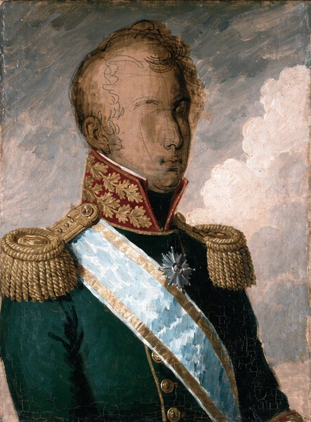
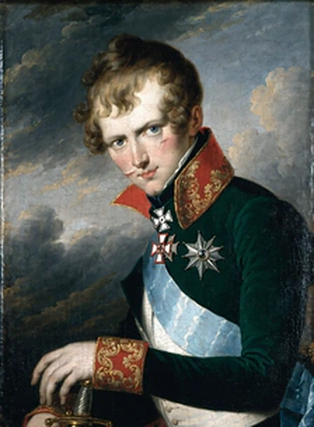
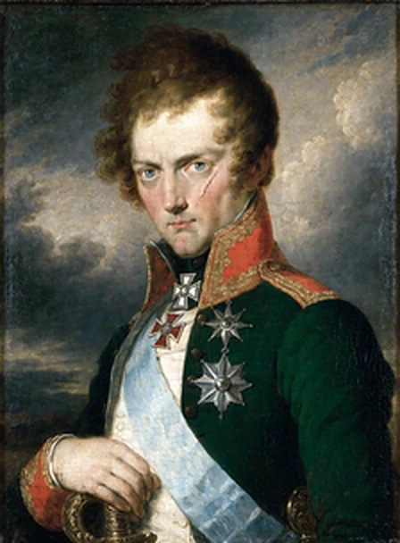
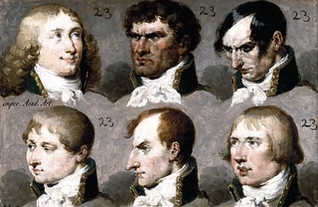

<title>The Artemiy Dossier</title>
<link rel="preconnect" href="https://fonts.googleapis.com">
<link rel="preconnect" href="https://fonts.gstatic.com" crossorigin>
<link rel="stylesheet" href="https://fonts.googleapis.com/css2?family=Marck+Script&family=Old+Standard+TT:ital,wght@0,400;0,700;1,400&family=Prata&display=swap">
<style>
/* Layout: a secret-police case file. A Guards-cloth hero holds the unfinished canvas; below it the contents of ten books;
   then the open book in one reading column, with the painter's ledger pinned beside the commission on wide screens. */
:root{
  --bg:#dde2dc;          /* blue-grey Russian chancellery paper */
  --sheet:#eaede7;
  --ink:#231d18;         /* iron-gall ink */
  --ink-2:#5a5249;
  --rule:#b6bcb3;
  --gold:#83601f;        /* bullion */
  --andrew:#2d628c;      /* St Andrew's riband */
  --andrew-tint:rgba(45,98,140,.13);
  --seal:#952a1f;        /* sealing wax */
  --seal-ink:#f6eee2;
  --cloth:#1b372c;       /* Guards coat */
  --on-cloth:#efe7d2;
  --on-cloth-2:#c5bca3;
  --laid:rgba(35,29,24,.04);
  --chip-on-bg:#231d18;
  --chip-on-fg:#eaede7;
  --ok:#3c6b3f;
  --warn:#8a5a12;
  --f-display:"Prata","Bodoni 72","Didot",Georgia,serif;
  --f-body:"Old Standard TT","Iowan Old Style","Palatino Linotype",Georgia,serif;
  --f-hand:"Marck Script","Snell Roundhand","Apple Chancery",cursive;
  --s--1:.82rem; --s-0:1rem; --s-1:1.18rem; --s-2:1.45rem; --s-3:1.95rem; --s-4:clamp(2.3rem,6vw,3.6rem);
}
@media (prefers-color-scheme: dark){
  :root:not([data-theme="light"]){
    --bg:#0e1915; --sheet:#14251e; --ink:#ebe2ca; --ink-2:#ada48c; --rule:#2b4136; --gold:#d4b066;
    --andrew:#8ebbdf; --andrew-tint:rgba(142,187,223,.15); --seal:#c4473a; --seal-ink:#fbf2e6;
    --cloth:#08120e; --on-cloth:#efe7d2; --on-cloth-2:#bdb49b; --laid:rgba(235,226,202,.025);
    --chip-on-bg:#ebe2ca; --chip-on-fg:#0e1915; --ok:#86b88a; --warn:#d9a54a; color-scheme:dark;
  }
}
:root[data-theme="dark"]{
  --bg:#0e1915; --sheet:#14251e; --ink:#ebe2ca; --ink-2:#ada48c; --rule:#2b4136; --gold:#d4b066;
  --andrew:#8ebbdf; --andrew-tint:rgba(142,187,223,.15); --seal:#c4473a; --seal-ink:#fbf2e6;
  --cloth:#08120e; --on-cloth:#efe7d2; --on-cloth-2:#bdb49b; --laid:rgba(235,226,202,.025);
  --chip-on-bg:#ebe2ca; --chip-on-fg:#0e1915; --ok:#86b88a; --warn:#d9a54a; color-scheme:dark;
}

*{box-sizing:border-box}
body{
  background-color:var(--bg); color:var(--ink);
  background-image:
    repeating-linear-gradient(0deg,var(--laid) 0 1px,transparent 1px 6px),
    repeating-linear-gradient(90deg,var(--laid) 0 1px,transparent 1px 92px);
  font-family:var(--f-body); font-size:17px; line-height:1.55;
  -webkit-font-smoothing:antialiased;
}
h1,h2,h3,h4{font-family:var(--f-display); font-weight:400; text-wrap:balance; margin:0; line-height:1.15}
p{margin:0}
button{font:inherit;color:inherit}
:focus-visible{outline:2px solid var(--andrew); outline-offset:2px}
.wrap{max-width:1180px; margin-inline:auto; padding-inline:clamp(16px,4vw,40px)}
.sc{font-variant:small-caps; letter-spacing:.06em}
.hand{font-family:var(--f-hand)}
.muted{color:var(--ink-2)}
.num{font-variant-numeric:tabular-nums lining-nums}

/* ---------- Hero ---------- */
.cloth{
  background:var(--cloth); color:var(--on-cloth);
  border-bottom:3px double var(--gold);
}
.hero{display:grid; grid-template-columns:minmax(0,1.25fr) minmax(0,.85fr); gap:clamp(24px,5vw,64px); align-items:center; padding-block:clamp(28px,5vw,56px)}
.eyebrow{font-size:var(--s--1); color:var(--on-cloth-2); letter-spacing:.08em}
.hero h1{font-size:var(--s-4); margin-top:14px; color:var(--on-cloth)}
.hero .sub{font-style:italic; color:var(--on-cloth-2); margin-top:8px; font-size:var(--s-1)}
.stamp{display:inline-flex; flex-wrap:wrap; gap:6px 14px; margin-top:20px; padding:8px 12px; border:1px solid color-mix(in srgb,var(--gold) 60%,transparent); font-size:var(--s--1); color:var(--on-cloth)}
.stamp b{color:var(--gold); font-weight:400}
.lead{margin-top:18px; max-width:62ch; color:var(--on-cloth)}
.codex{margin-top:22px; display:grid; grid-template-columns:repeat(2,minmax(0,1fr)); gap:10px 22px; padding:0; list-style:none; max-width:62ch}
.codex li{font-size:var(--s--1); color:var(--on-cloth-2); padding-top:8px; border-top:1px solid color-mix(in srgb,var(--on-cloth) 18%,transparent)}
.codex li strong{display:block; color:var(--on-cloth); font-weight:700; font-size:.9rem}
.frame{margin:0; justify-self:center; max-width:380px; width:100%}
.frame .gilt{
  padding:10px; background:linear-gradient(135deg,#7a5a1c,#e6c97a 22%,#8d6a26 45%,#f0d995 62%,#7a5a1c 85%);
  box-shadow:0 18px 40px rgba(0,0,0,.45), inset 0 0 0 1px rgba(0,0,0,.35);
}
.frame img{display:block; width:100%; height:auto; aspect-ratio:448/608; box-shadow:inset 0 0 0 1px rgba(0,0,0,.4)}
.frame figcaption{margin-top:12px; font-family:var(--f-hand); font-size:1.25rem; color:var(--on-cloth-2); text-align:center}

/* ---------- Contents ---------- */
section{padding-block:clamp(36px,6vw,64px) 0}
.sec-head{display:flex; flex-wrap:wrap; align-items:baseline; justify-content:space-between; gap:8px 24px; border-bottom:1px solid var(--rule); padding-bottom:10px}
.sec-head h2{font-size:var(--s-3)}
.sec-head p{max-width:60ch; color:var(--ink-2); font-size:.95rem}
.books{margin-top:20px; display:grid; grid-template-columns:repeat(auto-fill,minmax(205px,1fr)); gap:12px}
.book{position:relative; padding:14px 14px 14px 16px; background:var(--sheet); border:1px solid var(--rule); min-height:128px; display:flex; flex-direction:column; gap:6px}
.book .rn{font-family:var(--f-display); font-size:var(--s-2); line-height:1; color:var(--gold)}
.book h3{font-size:1.05rem}
.book p{font-size:.84rem; color:var(--ink-2); line-height:1.4}
.book .q{margin-top:auto; font-size:.78rem; letter-spacing:.06em; color:var(--ink-2)}
.book.open{border-color:var(--andrew); box-shadow:inset 0 0 0 1px var(--andrew)}
.book.open .q{color:var(--andrew)}
.wax{position:absolute; top:10px; right:10px; width:34px; height:34px; border-radius:50%;
  background:radial-gradient(circle at 35% 30%,color-mix(in srgb,var(--seal) 70%,#fff) 0,var(--seal) 40%,color-mix(in srgb,var(--seal) 75%,#000) 100%);
  color:var(--seal-ink); display:grid; place-items:center; font-family:var(--f-display); font-size:.62rem;
  box-shadow:0 1px 2px rgba(0,0,0,.35)}
.book.filed{border-color:color-mix(in srgb,var(--ok) 60%,var(--rule))}
.book.filed .wax{background:none; box-shadow:none; color:var(--ok); border:1.5px solid var(--ok); font-size:.9rem}
.book.filed .q{color:var(--ok)}
.book.open .wax{background:none; box-shadow:none; color:var(--andrew); border:1px dashed var(--andrew); font-size:.58rem}
.tally{display:flex; flex-wrap:wrap; gap:8px 26px; margin-top:16px; font-size:.9rem; color:var(--ink-2)}
.tally b{font-family:var(--f-display); font-weight:400; color:var(--ink); font-size:1.15rem}

/* ---------- Book head ---------- */
.book-head{display:grid; grid-template-columns:auto minmax(0,1fr); gap:6px 24px; align-items:end; padding-bottom:18px; border-bottom:3px double var(--rule)}
.book-head .big{font-family:var(--f-display); font-size:clamp(4rem,12vw,7.5rem); line-height:.8; color:var(--gold)}
.book-head h2{font-size:var(--s-4)}
.book-head p{color:var(--ink-2); max-width:62ch; margin-top:8px}
.parts{display:flex; flex-wrap:wrap; gap:6px 18px; margin-top:12px; font-size:.86rem}
.parts a{color:var(--andrew); text-decoration:none; border-bottom:1px solid transparent}
.parts a:hover{border-bottom-color:var(--andrew)}

.part{padding-top:clamp(32px,5vw,52px)}
.part-title{display:flex; align-items:baseline; gap:14px; flex-wrap:wrap}
.part-title .letter{font-family:var(--f-display); font-size:var(--s-2); color:var(--seal)}
.part-title h3{font-size:var(--s-3)}
.part-intro{margin-top:10px; max-width:66ch; color:var(--ink-2)}
.note{margin-top:12px; font-family:var(--f-hand); font-size:1.2rem; color:var(--andrew)}

/* ---------- Commission ---------- */
.commission{display:grid; grid-template-columns:minmax(0,1fr) 330px; gap:clamp(20px,3vw,40px); margin-top:22px; align-items:start}
.stage{padding-block:22px; border-top:1px solid var(--rule)}
.stage:first-child{border-top:0; padding-top:0}
.stage-h{display:flex; gap:12px; align-items:baseline; flex-wrap:wrap}
.stage-h .n{font-family:var(--f-display); color:var(--gold); font-size:1.1rem}
.stage-h h4{font-size:var(--s-1)}
.stage-h .opt{font-size:.82rem; color:var(--ink-2)}

.painters{display:grid; grid-template-columns:repeat(auto-fill,minmax(240px,1fr)); gap:12px; margin-top:14px}
.painter{all:unset; box-sizing:border-box; cursor:pointer; display:flex; flex-direction:column; gap:7px; padding:14px; background:var(--sheet); border:1px solid var(--rule); position:relative}
.painter:focus-visible{outline:2px solid var(--andrew); outline-offset:2px}
.painter:hover{border-color:var(--ink-2)}
.painter .pn{font-family:var(--f-display); font-size:1.08rem; line-height:1.2; padding-right:56px}
.painter .pd{font-size:.78rem; color:var(--ink-2); letter-spacing:.04em}
.painter .pl{font-size:.86rem; line-height:1.42}
.painter .pl i{color:var(--ink-2)}
.painter .pe{font-size:.84rem; line-height:1.4; padding-top:7px; border-top:1px dotted var(--rule)}
.painter .pe b{color:var(--andrew); font-weight:700}
.painter .tag{position:absolute; top:12px; right:12px; font-size:.66rem; letter-spacing:.1em; padding:2px 6px; border:1px solid var(--seal); color:var(--seal); transform:rotate(4deg); opacity:0}
.painter[aria-pressed="true"]{border-color:var(--andrew); background:linear-gradient(var(--andrew-tint),var(--andrew-tint)),var(--sheet); box-shadow:inset 0 0 0 1px var(--andrew)}
.painter[aria-pressed="true"] .tag{opacity:1}

.sheetbox{margin-top:14px; max-width:640px}
.sheet-img{position:relative; border:8px solid var(--sheet); outline:1px solid var(--rule); background:var(--sheet)}
.sheet-img img{display:block; width:100%; height:auto; aspect-ratio:640/416}
.hot{position:absolute; inset:0; display:grid; grid-template-columns:repeat(3,1fr); grid-template-rows:repeat(2,1fr)}
.hot button{all:unset; cursor:pointer; position:relative; box-sizing:border-box; border:2px solid transparent}
.hot button:hover{border-color:color-mix(in srgb,var(--gold) 70%,transparent)}
.hot button:focus-visible{border-color:var(--andrew)}
.hot button[aria-pressed="true"]{border-color:var(--gold); box-shadow:inset 0 0 0 2px rgba(0,0,0,.25)}
.hot button span{position:absolute; left:6px; bottom:6px; font-family:var(--f-display); font-size:.78rem; padding:1px 7px; background:rgba(20,16,12,.72); color:#f2e9d4}
.hot button[aria-pressed="true"] span{background:#b8902f; color:#1a140c}
.sheet-cap{display:flex; justify-content:space-between; gap:10px; flex-wrap:wrap; margin-top:8px; font-size:.8rem; color:var(--ink-2)}
.sheet-cap a{color:var(--andrew)}
.bases{display:grid; grid-template-columns:repeat(auto-fill,minmax(190px,1fr)); gap:8px; margin-top:12px}
.base{all:unset; box-sizing:border-box; cursor:pointer; padding:9px 11px; border:1px solid var(--rule); background:var(--sheet); font-size:.84rem; line-height:1.35}
.base b{font-family:var(--f-display); font-weight:400; display:block; font-size:.95rem}
.base:focus-visible{outline:2px solid var(--andrew); outline-offset:2px}
.base[aria-pressed="true"]{border-color:var(--gold); box-shadow:inset 0 0 0 1px var(--gold)}

fieldset.grp{border:0; padding:0; margin:18px 0 0; min-width:0}
fieldset.grp legend{font-family:var(--f-display); font-size:1.05rem; padding:0; margin-bottom:6px; color:var(--ink)}
.grp-note{font-size:.8rem; color:var(--ink-2); font-style:italic; margin:-2px 0 8px}
.prow{display:grid; grid-template-columns:132px minmax(0,1fr); gap:6px 14px; padding-block:7px; border-top:1px dotted var(--rule)}
.prow > .pk{font-size:.8rem; letter-spacing:.07em; font-variant:small-caps; color:var(--ink-2); padding-top:5px}
.chips{display:flex; flex-wrap:wrap; gap:6px}
.chip{all:unset; box-sizing:border-box; cursor:pointer; padding:4px 10px; border:1px solid var(--rule); background:var(--sheet); font-size:.86rem; line-height:1.35; border-radius:2px}
.chip:hover{border-color:var(--ink-2)}
.chip:focus-visible{outline:2px solid var(--andrew); outline-offset:1px}
.chip[aria-pressed="true"]{background:var(--chip-on-bg); color:var(--chip-on-fg); border-color:var(--chip-on-bg)}
.chip .pts{font-family:var(--f-display); color:var(--gold); margin-left:4px}
.chip[aria-pressed="true"] .pts{color:inherit}

textarea,input[type="text"]{width:100%; font:inherit; font-size:.98rem; color:var(--ink); background:var(--sheet); border:1px solid var(--rule); border-radius:0; padding:10px 12px; line-height:1.5; resize:vertical}
textarea:focus,input[type="text"]:focus{outline:2px solid var(--andrew); outline-offset:0; border-color:transparent}

/* ledger */
.ledger{position:sticky; top:calc(env(safe-area-inset-top,0px) + 14px); background:var(--sheet); border:1px solid var(--rule); padding:14px}
.ledger h4{font-size:1.1rem}
.ledger .mini{display:grid; grid-template-columns:86px minmax(0,1fr); gap:12px; align-items:center; margin-top:10px}
.ledger .mini img{width:86px; height:auto; aspect-ratio:448/608; display:block; border:3px solid #a8822f}
.meter{height:8px; background:color-mix(in srgb,var(--rule) 60%,transparent); position:relative; margin-top:6px}
.meter i{position:absolute; inset:0 auto 0 0; background:var(--gold); width:0; transition:width .3s}
.meter-l{display:flex; justify-content:space-between; font-size:.78rem; color:var(--ink-2); margin-top:4px}
.verdict{font-family:var(--f-hand); font-size:1.15rem; line-height:1.3; color:var(--andrew); margin-top:10px}
.ledger-list{margin-top:12px; max-height:46vh; overflow:auto; border-top:1px dotted var(--rule); padding-top:8px; font-size:.84rem}
.ledger-list dl{margin:0; display:grid; grid-template-columns:auto minmax(0,1fr); gap:2px 10px}
.ledger-list dt{color:var(--ink-2); font-variant:small-caps; letter-spacing:.05em}
.ledger-list dd{margin:0; font-family:var(--f-hand); font-size:1.08rem; line-height:1.25}
.ledger-list .empty{color:var(--ink-2); font-style:italic}

/* ---------- Physician ---------- */
.measures{display:grid; grid-template-columns:repeat(auto-fit,minmax(250px,1fr)); gap:12px; margin-top:20px}
.measure{background:var(--sheet); border:1px solid var(--rule); padding:14px}
.measure .ml{font-size:.8rem; letter-spacing:.07em; font-variant:small-caps; color:var(--ink-2)}
.measure .mv{font-family:var(--f-display); font-size:1.5rem; margin-top:4px; line-height:1.2}
.measure .mc{font-size:.84rem; color:var(--ink-2)}
input[type="range"]{width:100%; margin-top:10px; accent-color:var(--andrew)}
.scale-l{display:flex; justify-content:space-between; font-size:.72rem; color:var(--ink-2)}

.exam{display:grid; grid-template-columns:minmax(0,1.15fr) minmax(0,.85fr); gap:clamp(18px,3vw,36px); margin-top:22px; align-items:start}
.attrs{display:flex; flex-direction:column}
.attr{display:grid; grid-template-columns:minmax(0,1fr) auto; gap:4px 12px; padding-block:9px; border-top:1px dotted var(--rule)}
.attr:first-child{border-top:0}
.attr .an{font-family:var(--f-display); font-size:1rem}
.attr .ad{font-size:.8rem; color:var(--ink-2); line-height:1.35; grid-column:1}
.attr .ctl{grid-row:1 / span 2; grid-column:2; display:flex; align-items:center; gap:8px}
.step{all:unset; cursor:pointer; width:28px; height:28px; display:grid; place-items:center; border:1px solid var(--rule); background:var(--sheet); font-size:1.1rem; line-height:1}
.step:hover{border-color:var(--ink)}
.step:focus-visible{outline:2px solid var(--andrew); outline-offset:1px}
.step[disabled]{opacity:.35; cursor:not-allowed}
.pips{display:flex; gap:2px}
.pips i{width:7px; height:16px; border:1px solid var(--rule); display:block}
.pips i.on{background:var(--ink); border-color:var(--ink)}
.pips i.on.t2{background:var(--andrew); border-color:var(--andrew)}
.pips i.on.t3{background:var(--gold); border-color:var(--gold)}
.lvl{font-family:var(--f-display); width:1.6em; text-align:right}

.chart-card{position:sticky; top:calc(env(safe-area-inset-top,0px) + 14px); background:var(--sheet); border:1px solid var(--rule); padding:14px}
.pool{display:flex; align-items:baseline; gap:10px; flex-wrap:wrap}
.pool .big{font-family:var(--f-display); font-size:2.6rem; line-height:1}
.pool .big.neg{color:var(--seal)}
.pool small{color:var(--ink-2); font-size:.82rem}
.costs{font-size:.78rem; color:var(--ink-2); margin-top:6px; line-height:1.4}
.costs i{display:inline-block; width:9px; height:9px; margin:0 3px -1px 6px}
.radar{width:100%; height:auto; margin-top:6px; display:block}
.radar .ring{fill:none; stroke:var(--rule); stroke-width:1}
.radar .spoke{stroke:var(--rule); stroke-width:1}
.radar .area{fill:var(--andrew-tint); stroke:var(--andrew); stroke-width:2; stroke-linejoin:round}
.radar .dot{fill:var(--andrew)}
.radar text{fill:var(--ink-2); font-family:var(--f-body); font-size:12px}
.radar text.v{fill:var(--ink); font-family:var(--f-display); font-size:11px}

.affl{display:grid; grid-template-columns:repeat(auto-fill,minmax(230px,1fr)); gap:10px; margin-top:14px}
.ail{all:unset; box-sizing:border-box; cursor:pointer; padding:12px; background:var(--sheet); border:1px solid var(--rule); display:flex; flex-direction:column; gap:5px}
.ail:focus-visible{outline:2px solid var(--andrew); outline-offset:2px}
.ail .at{display:flex; justify-content:space-between; gap:8px; align-items:baseline}
.ail .at b{font-family:var(--f-display); font-weight:400; font-size:.98rem}
.ail .at span{font-family:var(--f-display); color:var(--gold); white-space:nowrap}
.ail p{font-size:.8rem; color:var(--ink-2); line-height:1.38}
.ail[aria-pressed="true"]{border-color:var(--seal); box-shadow:inset 0 0 0 1px var(--seal)}
.ail[aria-pressed="true"] .at span{color:var(--seal)}
.ail[aria-disabled="true"]{opacity:.45; cursor:not-allowed}
.flash{min-height:1.4em; font-size:.85rem; color:var(--seal); margin-top:8px}

/* ---------- Questions ---------- */
.qs{display:flex; flex-direction:column; gap:14px; margin-top:20px}
.qcard{display:grid; grid-template-columns:72px minmax(0,1fr); gap:6px 18px; background:var(--sheet); border:1px solid var(--rule); padding:16px}
.qcard .qn{font-family:var(--f-display); font-size:2rem; line-height:1; color:var(--gold); grid-row:1 / span 3}
.qcard .qn small{display:block; font-size:.7rem; color:var(--ink-2); letter-spacing:.1em; margin-top:6px}
.qcard h4{font-size:1.15rem}
.qcard .qp{font-size:.95rem; color:var(--ink-2); max-width:68ch}
.qcard textarea{margin-top:6px; min-height:110px}
.qmeta{display:flex; justify-content:space-between; font-size:.75rem; color:var(--ink-2); margin-top:4px}
.qcard.done .qn{color:var(--andrew)}

/* ---------- Seal ---------- */
.sealbox{margin-top:20px; display:grid; grid-template-columns:minmax(0,1fr) auto; gap:18px 28px; align-items:center; background:var(--sheet); border:1px solid var(--rule); padding:18px}
.checks{display:grid; grid-template-columns:repeat(auto-fit,minmax(170px,1fr)); gap:10px 18px; list-style:none; padding:0; margin:0}
.checks li{font-size:.86rem; color:var(--ink-2)}
.checks li b{display:block; font-family:var(--f-display); font-weight:400; font-size:1.2rem; color:var(--ink)}
.checks li.ok b{color:var(--ok)}
.seal-actions{display:flex; flex-direction:column; gap:10px; align-items:stretch; min-width:220px}
.btn-seal{all:unset; box-sizing:border-box; cursor:pointer; text-align:center; padding:12px 18px; background:var(--seal); color:var(--seal-ink); font-family:var(--f-display); font-size:1.05rem; letter-spacing:.03em; box-shadow:0 2px 0 color-mix(in srgb,var(--seal) 60%,#000)}
.btn-seal:hover{filter:brightness(1.08)}
.btn-seal:focus-visible{outline:2px solid var(--andrew); outline-offset:2px}
.btn-quiet{all:unset; box-sizing:border-box; cursor:pointer; text-align:center; padding:9px 14px; border:1px solid var(--rule); font-size:.9rem}
.btn-quiet:hover{border-color:var(--ink)}
.btn-quiet:focus-visible{outline:2px solid var(--andrew); outline-offset:2px}
.status{font-size:.82rem; color:var(--ink-2); text-align:center}
.status.ok{color:var(--ok)} .status.warn{color:var(--warn)}
#exportBox{margin-top:12px}
#exportBox textarea{min-height:200px; font-size:.8rem}
.coda{margin-top:28px; padding-block:22px 10px; border-top:3px double var(--rule); display:flex; gap:12px 24px; flex-wrap:wrap; justify-content:space-between; color:var(--ink-2); font-size:.9rem}
.coda .hand{font-size:1.35rem; color:var(--andrew)}

/* ---------- Book I filed: sitting + sheet ---------- */
:root{
  --s-hist:#5f4791; --s-law:#2d5f86; --s-lang:#2f6f6a; --s-math:#46622a; --s-nature:#5f6d1c; --s-russ:#8f3526;
  --s-faith:#7a5818; --s-drill:#35463b; --s-ride:#6a4627; --s-arts:#94406f; --s-court:#4e5375; --s-free:#666653;
}
.filed-tag{display:inline-flex; align-items:center; gap:8px; margin-top:10px; font-size:.8rem; letter-spacing:.1em; color:var(--ok)}
.filed-tag i{width:16px; height:16px; border-radius:50%; border:1.5px solid var(--ok); display:inline-grid; place-items:center; font-style:normal; font-size:.65rem}
.studies{display:grid; grid-template-columns:repeat(2,minmax(0,1fr)); gap:clamp(14px,3vw,30px); margin-top:20px; max-width:720px}
.study{margin:0; display:flex; flex-direction:column; gap:10px; min-width:0}
.study .gilt{padding:8px; background:linear-gradient(135deg,#7a5a1c,#e6c97a 22%,#8d6a26 45%,#f0d995 62%,#7a5a1c 85%); box-shadow:0 10px 26px rgba(0,0,0,.3)}
.study img{display:block; width:100%; height:auto; aspect-ratio:448/608}
.study figcaption{font-size:.86rem; color:var(--ink-2); line-height:1.42}
.study figcaption b{display:block; font-family:var(--f-display); font-weight:400; font-size:1.1rem; color:var(--ink)}
.study figcaption a{color:var(--andrew); font-size:.8rem}
.study.chosen .gilt{box-shadow:0 0 0 3px var(--andrew),0 12px 30px rgba(0,0,0,.35)}
.pick{all:unset; box-sizing:border-box; cursor:pointer; text-align:center; padding:9px 12px; border:1px solid var(--rule); background:var(--sheet); font-size:.92rem}
.pick:hover{border-color:var(--ink)}
.pick:focus-visible{outline:2px solid var(--andrew); outline-offset:2px}
.pick[aria-pressed="true"]{background:var(--chip-on-bg); color:var(--chip-on-fg); border-color:var(--chip-on-bg)}
.sit-grid{display:grid; grid-template-columns:minmax(0,1fr) minmax(0,1fr); gap:clamp(18px,3vw,36px); margin-top:24px; align-items:start}
.diebox{background:var(--cloth); color:var(--on-cloth); padding:16px; border:1px solid color-mix(in srgb,var(--gold) 50%,transparent)}
.diehead{display:grid; grid-template-columns:110px minmax(0,1fr); gap:16px; align-items:center}
.d20{width:110px; height:auto; display:block}
.d20 .f{fill:#13261e; stroke:#d4b066; stroke-width:2.2; stroke-linejoin:round}
.d20 .e{stroke:rgba(212,176,102,.55); stroke-width:1.3; fill:none}
.d20 text{fill:#f3ead3; font-family:var(--f-display); font-size:30px}
.d20.rolling{animation:wob .12s linear infinite}
@keyframes wob{0%{transform:rotate(-6deg)}50%{transform:rotate(6deg)}100%{transform:rotate(-6deg)}}
.diebox h4{font-size:1.15rem; color:var(--on-cloth)}
.diebox p{font-size:.86rem; color:var(--on-cloth-2); line-height:1.42; margin-top:4px}
.btn-roll{all:unset; box-sizing:border-box; cursor:pointer; display:inline-block; margin-top:10px; padding:9px 16px; background:#d4b066; color:#1a140c; font-family:var(--f-display); font-size:.98rem}
.btn-roll:hover{filter:brightness(1.07)}
.btn-roll:focus-visible{outline:2px solid #f3ead3; outline-offset:2px}
.btn-roll[disabled]{opacity:.5; cursor:not-allowed}
.odds{width:100%; border-collapse:collapse; margin-top:12px; font-size:.84rem}
.odds td{padding:6px 7px; border-top:1px dotted rgba(239,231,210,.25); vertical-align:top; color:var(--on-cloth-2)}
.odds td:first-child{font-family:var(--f-display); white-space:nowrap; color:#d4b066; width:58px}
.odds tr.hit td{background:rgba(212,176,102,.18); color:var(--on-cloth)}
.die-out{margin-top:10px; font-family:var(--f-hand); font-size:1.25rem; color:#f0d995; min-height:1.4em}

.filed{display:grid; grid-template-columns:minmax(0,.85fr) minmax(0,1.15fr); gap:clamp(18px,3vw,36px); margin-top:22px; align-items:start}
.vitals{background:var(--sheet); border:1px solid var(--rule); padding:16px}
.vitals h4{font-size:1.1rem}
.vitals dl{display:grid; grid-template-columns:auto minmax(0,1fr); gap:5px 14px; margin:10px 0 0}
.vitals dt{font-variant:small-caps; letter-spacing:.06em; color:var(--ink-2); font-size:.82rem; padding-top:2px}
.vitals dd{margin:0; font-size:.92rem}
.bars{margin-top:14px; display:flex; flex-direction:column; gap:5px; border-top:1px dotted var(--rule); padding-top:12px}
.bar{display:grid; grid-template-columns:96px minmax(0,1fr) 20px; gap:8px; align-items:center; font-size:.8rem}
.bar .track{height:8px; background:color-mix(in srgb,var(--rule) 55%,transparent); position:relative}
.bar .track i{position:absolute; inset:0 auto 0 0; background:var(--ink)}
.bar.low .track i{background:var(--seal)}
.bar.high .track i{background:var(--gold)}
.bar .v{font-family:var(--f-display); text-align:right}
.traits{display:grid; grid-template-columns:repeat(auto-fill,minmax(215px,1fr)); gap:10px}
.trait{display:grid; grid-template-columns:42px minmax(0,1fr); gap:10px; padding:12px; background:var(--sheet); border:1px solid var(--rule); align-content:start}
.trait .med{width:42px; height:42px; border-radius:50%; display:grid; place-items:center; font-family:var(--f-display); font-size:1.05rem; color:#2a1f0c; background:radial-gradient(circle at 35% 30%,#f3dc9a,#b98d33 58%,#7c5a1b)}
.trait.hid .med{background:radial-gradient(circle at 35% 30%,#d6d0c4,#7d776c 58%,#3d3a34); color:#14110c}
.trait b{font-family:var(--f-display); font-weight:400; display:block; font-size:1rem; line-height:1.2}
.trait p{font-size:.8rem; color:var(--ink-2); line-height:1.38; margin-top:3px}
.trait .src{font-size:.7rem; letter-spacing:.05em; color:var(--andrew); margin-top:5px; display:block}
.overrides{margin-top:16px; padding:12px 16px; border:1px dashed var(--andrew); font-size:.9rem}
.overrides h4{font-size:1rem}
.overrides ul{margin:6px 0 0; padding-left:18px}
.overrides li{margin-top:5px}
details.reopen{margin-top:34px; border-top:3px double var(--rule); padding-top:14px}
details.reopen > summary{cursor:pointer; font-family:var(--f-display); font-size:var(--s-1); list-style:none; display:flex; gap:10px; align-items:baseline}
details.reopen > summary::-webkit-details-marker{display:none}
details.reopen > summary::before{content:"+"; color:var(--gold); font-size:1.3rem; width:1ch}
details.reopen[open] > summary::before{content:"−"}
details.reopen > summary span{font-family:var(--f-body); font-size:.85rem; color:var(--ink-2)}

/* ---------- Book II ---------- */
.b2-steps{display:flex; flex-direction:column}
.cradle-scroll{overflow-x:auto; margin-top:14px; border:1px solid var(--rule); background:var(--sheet)}
.cradle-tl{position:relative; min-width:700px; height:176px}
.cradle-tl .axis{position:absolute; left:28px; right:28px; top:92px; height:2px; background:var(--ink-2)}
.cradle-tl .yr{position:absolute; top:100px; transform:translateX(-50%); font-family:var(--f-display); font-size:.8rem; color:var(--ink-2)}
.cradle-tl .yr::before{content:""; position:absolute; left:50%; top:-12px; width:1px; height:9px; background:var(--ink-2)}
.cradle-tl .birth{position:absolute; top:16px; transform:translateX(-50%); text-align:center; font-size:.74rem; line-height:1.25; color:var(--ink); width:118px}
.cradle-tl .birth b{display:block; font-family:var(--f-display); font-weight:400; font-size:.86rem}
.cradle-tl .birth::after{content:""; position:absolute; left:50%; top:71px; width:9px; height:9px; margin-left:-4.5px; border-radius:50%; background:var(--ink)}
.cradle-tl .birth.gone b{text-decoration:line-through; text-decoration-color:var(--seal)}
.cradle-tl .slotpin{position:absolute; top:120px; transform:translateX(-50%); font-family:var(--f-display); font-size:.78rem; width:30px; height:30px; display:grid; place-items:center; border:1.5px dashed var(--gold); color:var(--gold); border-radius:50%; background:var(--sheet)}
.cradle-tl .slotpin.on{border-style:solid; background:var(--gold); color:var(--sheet)}
.cradles{display:grid; grid-template-columns:repeat(auto-fill,minmax(220px,1fr)); gap:10px; margin-top:12px}
.cradle{all:unset; box-sizing:border-box; cursor:pointer; padding:12px 14px; border:1px solid var(--rule); background:var(--sheet); display:flex; flex-direction:column; gap:5px}
.cradle:hover{border-color:var(--ink-2)}
.cradle:focus-visible{outline:2px solid var(--andrew); outline-offset:2px}
.cradle .ch{display:flex; justify-content:space-between; gap:8px; align-items:baseline}
.cradle .ch b{font-family:var(--f-display); font-weight:400; font-size:1.02rem}
.cradle .ch span{font-family:var(--f-display); color:var(--gold)}
.cradle .cd{font-size:.8rem; color:var(--ink-2); font-variant-numeric:tabular-nums}
.cradle p{font-size:.84rem; line-height:1.4}
.cradle[aria-pressed="true"]{border-color:var(--gold); box-shadow:inset 0 0 0 1px var(--gold); background:linear-gradient(color-mix(in srgb,var(--gold) 10%,transparent),color-mix(in srgb,var(--gold) 10%,transparent)),var(--sheet)}

.envs{display:grid; grid-template-columns:repeat(auto-fill,minmax(250px,1fr)); gap:12px; margin-top:12px}
.env{position:relative; background:var(--sheet); border:1px solid var(--rule); padding:14px; display:flex; flex-direction:column; gap:8px; min-width:0}
.env .eh{display:grid; grid-template-columns:minmax(0,1fr) 40px; gap:10px; align-items:start}
.env .eh b{font-family:var(--f-display); font-weight:400; font-size:1.05rem; line-height:1.2}
.env .eh small{display:block; color:var(--ink-2); font-size:.8rem; margin-top:3px}
.env .sealbtn{all:unset; cursor:pointer; width:40px; height:40px; border-radius:50%; display:grid; place-items:center; color:var(--seal-ink); font-family:var(--f-display); font-size:.7rem;
  background:radial-gradient(circle at 35% 30%,color-mix(in srgb,var(--seal) 70%,#fff) 0,var(--seal) 42%,color-mix(in srgb,var(--seal) 72%,#000) 100%); box-shadow:0 1px 2px rgba(0,0,0,.35)}
.env .sealbtn:focus-visible{outline:2px solid var(--andrew); outline-offset:2px}
.env.broken .sealbtn{background:none; box-shadow:none; border:1px dashed var(--seal); color:var(--seal)}
.env .ebody{font-size:.86rem; line-height:1.45; display:flex; flex-direction:column; gap:6px}
.env .ebody .hook{font-size:.8rem; color:var(--ink-2); border-left:2px solid var(--rule); padding-left:8px}
.env .ebody .hook i{color:var(--andrew); font-style:normal; font-variant:small-caps; letter-spacing:.05em}
.env .choose{all:unset; box-sizing:border-box; cursor:pointer; text-align:center; padding:7px 10px; border:1px solid var(--rule); font-size:.88rem; margin-top:auto}
.env .choose:focus-visible{outline:2px solid var(--andrew); outline-offset:2px}
.env .choose[aria-pressed="true"]{background:var(--chip-on-bg); color:var(--chip-on-fg); border-color:var(--chip-on-bg)}
.env.picked{border-color:var(--seal); box-shadow:inset 0 0 0 1px var(--seal)}
.env-tools{display:flex; gap:10px; flex-wrap:wrap; align-items:center; margin-top:10px; font-size:.84rem; color:var(--ink-2)}

.succ-grid{display:grid; grid-template-columns:minmax(0,1.35fr) minmax(0,.65fr); gap:clamp(16px,3vw,30px); margin-top:22px; align-items:start}
.tree{background:var(--sheet); border:1px solid var(--rule); padding:16px}
.tree .parents{display:flex; flex-wrap:wrap; gap:10px; align-items:center; justify-content:center}
.pcard{padding:8px 12px; border:1px solid var(--rule); text-align:center; font-size:.8rem; color:var(--ink-2); min-width:0}
.pcard b{display:block; font-family:var(--f-display); font-weight:400; font-size:1rem; color:var(--ink)}
.knot{font-family:var(--f-display); color:var(--gold)}
.tdrop{width:2px; height:16px; background:var(--rule); margin:8px auto}
.trow h5{font-family:var(--f-body); font-variant:small-caps; letter-spacing:.07em; font-weight:400; font-size:.8rem; color:var(--ink-2); margin:6px 0 6px; border-top:1px solid var(--rule); padding-top:8px}
.kids{display:grid; grid-template-columns:repeat(auto-fill,minmax(118px,1fr)); gap:6px}
.kid{padding:7px 8px; border:1px solid var(--rule); font-size:.74rem; line-height:1.3; color:var(--ink-2); position:relative; min-width:0}
.kid b{display:block; font-family:var(--f-display); font-weight:400; font-size:.92rem; color:var(--ink)}
.kid .age{font-variant-numeric:tabular-nums}
.kid.you{border-color:var(--gold); box-shadow:inset 0 0 0 1px var(--gold); background:color-mix(in srgb,var(--gold) 9%,transparent)}
.kid.dead b,.kid.out b{text-decoration:line-through; text-decoration-color:var(--seal)}
.kid.dead,.kid.out{opacity:.72}
.kid .badge{display:inline-block; margin-top:4px; font-size:.64rem; letter-spacing:.06em; padding:1px 5px; border:1px solid var(--seal); color:var(--seal)}
.kid.you .badge{border-color:var(--gold); color:var(--gold)}
.succ{background:var(--sheet); border:1px solid var(--rule); padding:16px}
.succ h4{font-size:1.05rem}
.succ ol{margin:8px 0 0; padding-left:22px; font-size:.9rem}
.succ li{padding-block:3px}
.succ li.you{font-family:var(--f-display); color:var(--gold)}
.succ li.void{color:var(--ink-2); text-decoration:line-through}
.succ .warn{margin-top:10px; font-size:.82rem; color:var(--seal)}
.gauges{display:flex; flex-direction:column; gap:10px; margin-top:14px; border-top:1px dotted var(--rule); padding-top:12px}
.gauge .gl{display:flex; justify-content:space-between; font-size:.8rem}
.gauge .gl b{font-family:var(--f-display); font-weight:400}
.gauge .gt{height:9px; background:color-mix(in srgb,var(--rule) 55%,transparent); position:relative; margin-top:3px}
.gauge .gt i{position:absolute; inset:0 auto 0 0; transition:width .35s}
.gauge.leg .gt i{background:var(--andrew)}
.gauge.cri .gt i{background:var(--seal)}
.gauge.sus .gt i{background:var(--gold)}
.gauge small{display:block; font-size:.74rem; color:var(--ink-2); margin-top:2px}

.dialwrap{display:grid; grid-template-columns:170px minmax(0,1fr); gap:20px; align-items:center; margin-top:14px; background:var(--sheet); border:1px solid var(--rule); padding:16px}
.dial{width:170px; height:170px; display:block}
.dial .rim{fill:var(--cloth); stroke:var(--gold); stroke-width:3}
.dial .tick{stroke:#d4b066; stroke-width:2}
.dial .needle{stroke:#f3ead3; stroke-width:4; stroke-linecap:round; transition:transform .45s cubic-bezier(.3,1.4,.5,1); transform-origin:85px 85px}
.dial .hub{fill:#d4b066}
.dial text{fill:#d4b066; font-family:var(--f-display); font-size:11px}
.dialopts{display:flex; flex-direction:column; gap:6px}
.dopt{all:unset; box-sizing:border-box; cursor:pointer; padding:8px 12px; border:1px solid var(--rule); font-size:.88rem; line-height:1.35}
.dopt b{font-family:var(--f-display); font-weight:400}
.dopt span{display:block; font-size:.78rem; color:var(--ink-2)}
.dopt:focus-visible{outline:2px solid var(--andrew); outline-offset:2px}
.dopt[aria-pressed="true"]{border-color:var(--andrew); box-shadow:inset 0 0 0 1px var(--andrew); background:var(--andrew-tint)}

.scale-wrap{display:grid; grid-template-columns:minmax(0,1fr) minmax(0,1fr); gap:clamp(16px,3vw,30px); margin-top:16px; align-items:start}
.scale-card{background:var(--sheet); border:1px solid var(--rule); padding:14px; position:sticky; top:calc(env(safe-area-inset-top,0px) + 14px)}
.balance{width:100%; height:auto; display:block}
.balance .post{fill:var(--ink-2)}
.balance .beam{stroke:var(--ink); stroke-width:5; stroke-linecap:round}
.balance .str{stroke:var(--ink-2); stroke-width:1.2}
.balance .pan{fill:var(--bg); stroke:var(--ink); stroke-width:2}
.balance .pl{fill:var(--ink); font-family:var(--f-display); font-size:20px}
.balance .cap{fill:var(--ink-2); font-family:var(--f-body); font-size:12px}
.balance .capc{fill:var(--andrew)} .balance .capp{fill:var(--seal)}
.scale-verdict{font-family:var(--f-hand); font-size:1.35rem; color:var(--andrew); margin-top:6px; line-height:1.25}
.mems{display:flex; flex-direction:column}
.mem{display:grid; grid-template-columns:minmax(0,1fr) auto; gap:6px 12px; padding-block:9px; border-top:1px dotted var(--rule); align-items:center}
.mem:first-child{border-top:0}
.mem .mt{font-size:.88rem; line-height:1.38}
.mem .mt small{display:block; color:var(--ink-2); font-size:.74rem; font-variant-numeric:tabular-nums}
.mem .w{color:var(--gold); letter-spacing:2px; font-size:.7rem}
.side{display:flex; gap:4px}
.side button{all:unset; box-sizing:border-box; cursor:pointer; font-size:.76rem; padding:4px 8px; border:1px solid var(--rule); white-space:nowrap}
.side button:focus-visible{outline:2px solid var(--andrew); outline-offset:1px}
.side button.c[aria-pressed="true"]{background:var(--andrew); border-color:var(--andrew); color:var(--sheet)}
.side button.p[aria-pressed="true"]{background:var(--seal); border-color:var(--seal); color:var(--seal-ink)}

.tt-wrap{display:grid; grid-template-columns:minmax(0,1.3fr) minmax(0,.7fr); gap:clamp(16px,3vw,30px); margin-top:16px; align-items:start}
.brushes{display:flex; flex-wrap:wrap; gap:6px; margin-top:10px}
.brush{all:unset; box-sizing:border-box; cursor:pointer; display:inline-flex; align-items:center; gap:7px; padding:5px 9px 5px 6px; border:1px solid var(--rule); background:var(--sheet); font-size:.8rem}
.brush i{width:16px; height:16px; display:inline-block}
.brush:focus-visible{outline:2px solid var(--andrew); outline-offset:1px}
.brush[aria-pressed="true"]{border-color:var(--ink); box-shadow:inset 0 0 0 1px var(--ink)}
.tt-scroll{overflow-x:auto; margin-top:12px}
table.tt{border-collapse:separate; border-spacing:3px; width:100%; min-width:520px; table-layout:fixed}
table.tt th{font-family:var(--f-display); font-weight:400; font-size:.8rem; color:var(--ink-2); padding:2px}
table.tt th.hr{width:58px; text-align:right; font-family:var(--f-body); font-size:.72rem; font-variant-numeric:tabular-nums}
table.tt td{padding:0}
.cell{all:unset; box-sizing:border-box; cursor:pointer; display:grid; place-items:center; width:100%; height:38px; border:1px dashed var(--rule); font-size:.7rem; color:#fff; font-weight:700; letter-spacing:.04em; user-select:none; touch-action:none}
.cell:focus-visible{outline:2px solid var(--andrew); outline-offset:1px}
.cell.filled{border-style:solid; border-color:transparent}
.tt-tools{display:flex; flex-wrap:wrap; gap:8px; margin-top:10px; font-size:.82rem; color:var(--ink-2); align-items:center}
.edu{background:var(--sheet); border:1px solid var(--rule); padding:14px}
.edu h4{font-size:1.05rem}
.edu .sbar{display:grid; grid-template-columns:110px minmax(0,1fr) 26px; gap:8px; align-items:center; font-size:.8rem; margin-top:7px}
.edu .sbar .track{height:10px; background:color-mix(in srgb,var(--rule) 55%,transparent); position:relative}
.edu .sbar .track i{position:absolute; inset:0 auto 0 0; background:var(--andrew); transition:width .3s}
.edu .sbar .v{font-family:var(--f-display); text-align:right}
.edu .tutors{margin-top:12px; font-size:.78rem; color:var(--ink-2); border-top:1px dotted var(--rule); padding-top:8px; line-height:1.45}

.const-wrap{display:grid; grid-template-columns:minmax(0,1.1fr) minmax(0,.9fr); gap:clamp(16px,3vw,30px); margin-top:16px; align-items:start}
.constellation{width:100%; height:auto; display:block; background:var(--cloth); touch-action:none}
.constellation .ring{fill:none; stroke:rgba(239,231,210,.16); stroke-width:1}
.constellation .ring.r5{stroke:rgba(201,72,59,.55); stroke-dasharray:4 4}
.constellation .ring.r1{stroke:rgba(142,187,223,.5)}
.constellation .spoke{stroke:rgba(239,231,210,.08)}
.constellation .tie{stroke-width:1.6}
.constellation .you{fill:#d4b066}
.constellation .youl{fill:#1a140c; font-family:var(--f-display); font-size:12px}
.constellation .node{cursor:grab; outline:none}
.constellation .node circle{stroke:#f3ead3; stroke-width:1.5}
.constellation .node:focus-visible circle{stroke:#8ebbdf; stroke-width:3}
.constellation .node text{fill:#f3ead3; font-family:var(--f-body); font-size:12px; pointer-events:none}
.constellation .node text.ini{fill:#0e1915; font-family:var(--f-display); font-size:11px}
.constellation .lvl{fill:rgba(239,231,210,.45); font-family:var(--f-body); font-size:10px}
.bonds{display:flex; flex-direction:column}
.bond{display:grid; grid-template-columns:minmax(0,1fr) 150px; gap:8px; align-items:center; padding-block:6px; border-top:1px dotted var(--rule); font-size:.86rem}
.bond:first-child{border-top:0}
.bond small{display:block; color:var(--ink-2); font-size:.74rem}
.bond select{font:inherit; font-size:.84rem; color:var(--ink); background:var(--sheet); border:1px solid var(--rule); padding:4px 6px; width:100%}
.bond select:focus{outline:2px solid var(--andrew); outline-offset:0}

.letters{display:flex; flex-direction:column; gap:18px; margin-top:18px}
.missive{background:var(--sheet); border:1px solid var(--rule); padding:clamp(16px,3vw,26px); position:relative; box-shadow:0 1px 0 var(--rule),0 3px 0 -1px var(--sheet),0 4px 0 -1px var(--rule)}
.missive .lh{display:flex; flex-wrap:wrap; justify-content:space-between; gap:4px 16px; font-size:.8rem; color:var(--ink-2); border-bottom:1px solid var(--rule); padding-bottom:8px}
.missive .lh b{font-family:var(--f-display); font-weight:400; font-size:1rem; color:var(--ink)}
.missive .lq{font-family:var(--f-display); color:var(--gold); font-size:.9rem}
.missive .lbody{font-family:var(--f-hand); font-size:1.28rem; line-height:1.38; color:var(--ink); margin-top:12px; max-width:66ch}
.missive .lask{margin-top:12px; font-size:.98rem; max-width:68ch}
.missive .lask b{font-family:var(--f-display); font-weight:400}
.missive textarea{margin-top:10px; min-height:120px; background-color:var(--bg); background-image:repeating-linear-gradient(0deg,transparent 0 26px,color-mix(in srgb,var(--andrew) 22%,transparent) 26px 27px); line-height:27px; padding-top:4px}
.missive .lmeta{display:flex; justify-content:space-between; font-size:.75rem; color:var(--ink-2); margin-top:4px}
.missive .wax2{position:absolute; top:-12px; right:18px; width:30px; height:30px; border-radius:50%; background:radial-gradient(circle at 35% 30%,color-mix(in srgb,var(--seal) 70%,#fff) 0,var(--seal) 42%,color-mix(in srgb,var(--seal) 72%,#000) 100%); box-shadow:0 1px 2px rgba(0,0,0,.35)}
.missive.done .wax2{background:var(--ok)}
.missive .mstat{display:flex; flex-wrap:wrap; gap:6px; margin-top:10px}

@media (max-width:980px){
  .succ-grid,.scale-wrap,.tt-wrap,.const-wrap,.sit-grid,.filed{grid-template-columns:minmax(0,1fr)}
  .scale-card{position:static}
}
@media (max-width:560px){
  .studies{grid-template-columns:minmax(0,1fr)}
  .study{max-width:340px}
  .dialwrap{grid-template-columns:minmax(0,1fr); justify-items:center}
  .diehead{grid-template-columns:80px minmax(0,1fr)}
  .d20{width:80px}
  .bond{grid-template-columns:minmax(0,1fr)}
  .mem{grid-template-columns:minmax(0,1fr)}
}
@media (prefers-reduced-motion:reduce){
  .d20.rolling{animation:none}
  .dial .needle,.gauge .gt i,.edu .sbar .track i{transition:none}
}

/* ---------- Responsive ---------- */
@media (max-width:980px){
  .commission{grid-template-columns:minmax(0,1fr)}
  .ledger{position:static}
  .exam{grid-template-columns:minmax(0,1fr)}
  .chart-card{position:static}
}
@media (max-width:760px){
  .hero{grid-template-columns:minmax(0,1fr)}
  .frame{max-width:300px}
  .codex{grid-template-columns:minmax(0,1fr)}
  .prow{grid-template-columns:minmax(0,1fr)}
  .prow > .pk{padding-top:0}
  .sealbox{grid-template-columns:minmax(0,1fr)}
  .qcard{grid-template-columns:minmax(0,1fr)}
  .qcard .qn{grid-row:auto; font-size:1.5rem}
  .qcard .qn small{display:inline; margin-left:8px}
  .book-head{grid-template-columns:minmax(0,1fr)}
}
@media (prefers-reduced-motion:reduce){ .meter i{transition:none} }
</style>

<header class="cloth">
  <div class="wrap hero">
    <div>
      <p class="eyebrow sc">Тайная экспедиція Сената · Secret Expedition of the Governing Senate · Case file № 1801/III</p>
      <h1>Artemiy Pavlovich</h1>
      <p class="sub">Grand Duke of Russia. Son of the reigning Emperor. Subject of this file.</p>
      <div class="stamp"><span><b>Place</b> St Michael's Castle, St Petersburg</span><span><b>Date</b> 11 March 1801 (O.S.) · 23 March (N.S.)</span><span><b>Hour</b> evening</span></div>
      <p class="lead">Your father, Emperor Paul I, has gone up to his bedchamber in the new castle he believes no one can storm. Count Pahlen, Military Governor of the capital, holds the keys to the city. Across town, dozens of Guards officers are drinking champagne at General Talyzin's quarters with the Zubov brothers and General Bennigsen. Before this night plays out, the Expedition needs to know exactly who you are.</p>
      <ul class="codex">
        <li><strong>Merciless</strong>You can die. A coup, a fever, a bullet, a cup of wine. Nothing protects you but your choices.</li>
        <li><strong>History holds until you break it</strong>Events run as they really did, until your actions change them.</li>
        <li><strong>Your words outrank your numbers</strong>Where your written answers contradict your points, the words win.</li>
        <li><strong>One book per message</strong>Ten books, 113 questions. Answers save to the Chancellery as you write.</li>
      </ul>
    </div>
    <figure class="frame">
      <div class="gilt"></div>
      <figcaption>Kiprensky has begun. Two studies wait below.</figcaption>
    </figure>
  </div>
</header>

<main class="wrap">
  <section id="contents" aria-labelledby="contents-h">
    <div class="sec-head">
      <h2 id="contents-h">Ten books</h2>
      <p>One book opens with each message. Four of the ten are given to ideology, because in this game your beliefs are what you govern with.</p>
    </div>
    <div class="books" id="books"></div>
    <div class="tally" id="tally"></div>
  </section>

  <section id="book1" aria-labelledby="b1-h">
    <div class="book-head">
      <div class="big" aria-hidden="true">I</div>
      <div>
        <h2 id="b1-h">The Sitter</h2>
        <p>A painter, a physician and a mirror. Sealed on 10 October. Kiprensky's two studies are waiting for your choice, and the Expedition has filed what it learned about your body.</p>
        <span class="filed-tag sc"><i>✓</i>Filed with the Expedition</span>
        <nav class="parts" aria-label="Parts of Book I">
          <a href="#sitting">First sitting</a><a href="#sheet">As filed</a><a href="#b1form">Your Book I answers</a>
        </nav>
      </div>
    </div>

    <!-- Book I filed: the first sitting -->
    <div class="part" id="sitting">
      <div class="part-title"><span class="letter">✦</span><h3>Kiprensky's first sitting</h3></div>
      <p class="part-intro">The boy from the Academy worked through the evening by candle and lamp and brought you two oil studies. He wants to know which one to finish, what to change, and whether his nerve will hold. Choose a study, write your corrections, and throw the Prodigy's die. The final canvas comes in my next message.</p>
      <div class="studies">
        <figure class="study" id="studyA">
          <div class="gilt"></div>
          <figcaption><b>Study A · The eager one</b>Leaning into the room, curls loose, the scar bright on the cheek. Younger, warmer, restless. <a href="https://img.recraft.ai/Lpq8IkYGcgHlQR_DStUZiALKwZZbLLmFBwW2fstYUEs/rs:fit:896:1216:0/raw:1/plain/abs://external/images/200b714c-f5ad-4a5b-9c97-8584a3385a63" target="_blank" rel="noopener">Full size</a></figcaption>
          <button class="pick" type="button" data-study="A" aria-pressed="false">Finish study A</button>
        </figure>
        <figure class="study" id="studyB">
          <div class="gilt"></div>
          <figcaption><b>Study B · The imperious one</b>Brows low and drawn, the gaze cold and level, hair thrown back by the wind. Closer to the predator in your notes. <a href="https://img.recraft.ai/COjQrc_T-pkZTqjNfPN8TF7KnCy--ao2Oiu26n9Kp4k/rs:fit:896:1216:0/raw:1/plain/abs://external/images/f51f1bc1-3eb5-4271-ae31-acbdb24ead85" target="_blank" rel="noopener">Full size</a></figcaption>
          <button class="pick" type="button" data-study="B" aria-pressed="false">Finish study B</button>
        </figure>
      </div>
      <div class="sit-grid">
        <div>
          <label for="corrections" class="sc" style="font-size:.85rem;color:var(--ink-2);display:block;margin-bottom:6px">Corrections for the painter</label>
          <textarea id="corrections" rows="6" placeholder="For example: keep study B's brows and gaze, but give it study A's lean toward the viewer. The scar thinner. The shoulders broader, he is two metres tall."></textarea>
          <p class="muted" style="font-size:.82rem;margin-top:6px">Kiprensky can change anything: the face, the coat, the light, the sky. Say what to keep from the other study too.</p>
        </div>
        <div class="diebox">
          <div class="diehead">
            <svg class="d20" id="d20" viewBox="0 0 120 120" aria-hidden="true">
              <polygon class="f" points="60,4 109,32 109,88 60,116 11,88 11,32"/>
              <polyline class="e" points="60,4 60,30 109,32"/><polyline class="e" points="60,30 11,32"/>
              <polygon class="e" points="60,30 96,80 24,80"/>
              <polyline class="e" points="24,80 11,88"/><polyline class="e" points="96,80 109,88"/><polyline class="e" points="24,80 60,116 96,80"/>
              <polyline class="e" points="11,32 24,80"/><polyline class="e" points="109,32 96,80"/>
              <text id="d20n" x="60" y="70" text-anchor="middle">20</text>
            </svg>
            <div>
              <h4>The Prodigy's die</h4>
              <p>A nineteen-year-old pupil painting the heir. One throw decides how the court receives the finished canvas.</p>
              <button class="btn-roll" id="rollBtn" type="button">Throw the d20</button>
            </div>
          </div>
          <table class="odds" id="odds">
            <tr data-r="1"><td>1</td><td>Disaster. The court laughs at "the schoolboy's Apollo". Kiprensky is sent back to the Academy in disgrace.</td></tr>
            <tr data-r="2"><td>2–9</td><td>Flawed. One feature goes wrong and the engraving carries the mistake to every embassy.</td></tr>
            <tr data-r="3"><td>10–17</td><td>Success. The likeness is praised and Kiprensky becomes your painter for life.</td></tr>
            <tr data-r="4"><td>18–20</td><td>Masterpiece. The portrait becomes the image of your reign across Europe.</td></tr>
          </table>
          <p class="die-out" id="dieOut" role="status" aria-live="polite"></p>
        </div>
      </div>
    </div>

    <!-- Book I filed: the sheet -->
    <div class="part" id="sheet">
      <div class="part-title"><span class="letter">✦</span><h3>The Sitter, as filed</h3></div>
      <p class="part-intro">What the Expedition now knows about your body, and the traits it gives you. Every trait can grow, fade or turn into something else in play. The grey medallions are hidden from the court.</p>
      <div class="filed">
        <div class="vitals">
          <h4>Dr Wylie's summary</h4>
          <dl>
            <dt>Height</dt><dd>2 arshins 14½ vershoks, 206.7 cm. A head above the tallest grenadier.</dd>
            <dt>Weight</dt><dd>4 poods 31 funts, 78.2 kg. Broad bones, little flesh.</dd>
            <dt>Hands</dt><dd>Large, muscular, elegant. Ambidextrous.</dd>
            <dt>Afflictions</dt><dd>Weak chest, megrims, your father's sleeplessness.</dd>
            <dt>Habits</dt><dd>No wine, no tobacco. Four hours' sleep. Ice water, a spartan table, a dawn ride on Apollon.</dd>
          </dl>
          <div class="bars" id="b1bars"></div>
        </div>
        <div>
          <div class="traits" id="traits"></div>
          <div class="overrides">
            <h4>Where your words overruled your numbers</h4>
            <ul>
              <li>Brows: you ticked "fine, arched" but wrote "low, angular, almost always frowning". The painter follows your note.</li>
              <li>Build: 78 kg at 2 metres would be thin, but you wrote "monstrous, very broad shoulders". You are a broad-boned giant with no spare flesh, which suits a weak chest.</li>
              <li>Your father mocked your restless, eager grace and you "have done nothing about that". That counts as defiance, and Paul has noticed.</li>
            </ul>
          </div>
        </div>
      </div>
    </div>

    <details class="reopen" id="b1form">
      <summary>Your Book I answers <span>Open to read or change them. Changes save as before.</span></summary>
    <!-- A. Commission -->
    <div class="part" id="partA">
      <div class="part-title"><span class="letter">A</span><h3>The commission</h3></div>
      <p class="part-intro">Choose a painter, a sitter's type and every feature of your face. Your choices go to the painter, and the finished oil portrait comes back in my next message, painted by an image model in the manner of the state portrait you showed me. Expect sittings: a first likeness, your corrections, then the final canvas.</p>

      <div class="commission">
        <div>
          <div class="stage">
            <div class="stage-h"><span class="n">1</span><h4>Choose the painter</h4><span class="opt">Every one of them is in or near Petersburg this spring.</span></div>
            <div class="painters" id="painters"></div>
          </div>

          <div class="stage">
            <div class="stage-h"><span class="n">2</span><h4>Pick a type from the Academy study sheet</h4><span class="opt">A starting face. Everything below refines it.</span></div>
            <div class="sheetbox">
              <div class="sheet-img">
                
                <div class="hot" id="hot"></div>
              </div>
              <div class="sheet-cap"><span>Six heads painted for this file. The painter marked each sitter's age.</span><a href="https://img.recraft.ai/dXCN0JXoPF5fkvH6FP0xdqDGjbmjkktqhfX1cUSwOeg/rs:fit:1280:832:0/raw:1/plain/abs://external/images/0394e918-2a9f-4e8a-93d9-e4a5d49ca969" target="_blank" rel="noopener">Open the sheet at full size</a></div>
              <div class="bases" id="bases"></div>
            </div>
          </div>

          <div class="stage">
            <div class="stage-h"><span class="n">3</span><h4>The sitting</h4><span class="opt"><span id="featCount">43</span> features. Leave any blank and the painter decides.</span></div>
            <div id="face"></div>
          </div>

          <div class="stage">
            <div class="stage-h"><span class="n">4</span><h4>Anything else the painter must see</h4></div>
            <label class="muted" for="painterNotes" style="display:block;font-size:.88rem;margin:10px 0 6px">A habit of the mouth, a ring, the way the light should fall. Write it here in your own words.</label>
            <textarea id="painterNotes" rows="4" placeholder="For example: a thin white scar through the left eyebrow, and the eyes should look past the viewer toward something he does not want to see."></textarea>
          </div>
        </div>

        <aside class="ledger" aria-label="Painter's ledger">
          <h4>The painter's ledger</h4>
          <div class="mini">
            
            <div>
              <div class="sc" style="font-size:.78rem;color:var(--ink-2)">Likeness given</div>
              <div class="meter"><i id="likeBar"></i></div>
              <div class="meter-l"><span id="likeTxt" class="num">0 of 43</span><span id="likePct" class="num">0%</span></div>
            </div>
          </div>
          <p class="verdict" id="verdict">No painter engaged yet.</p>
          <div class="ledger-list" id="ledgerList"></div>
        </aside>
      </div>
    </div>

    <!-- B. Physician -->
    <div class="part" id="partB">
      <div class="part-title"><span class="letter">B</span><h3>The physician's ledger</h3></div>
      <p class="part-intro">Dr James Wylie, the Scottish surgeon your father raised to court rank after he saved Count Kutaisov, measures you in arshins and vershoks, weighs you in poods, and keeps a confidential ledger. Every attribute starts at 3. You have 30 points to raise them, plus whatever your afflictions pay you. Higher levels cost more.</p>

      <div class="measures">
        <div class="measure">
          <div class="ml">Height</div>
          <div class="mv num" id="hVal">2 arshins 8 vershoks</div>
          <div class="mc num" id="hCm">≈ 177.8 cm</div>
          <label for="height" class="muted" style="font-size:.78rem;display:block;margin-top:8px">Your father stands about 2 arshins 5½ vershoks. Grenadiers of the Guard are chosen tall.</label>
          <input type="range" id="height" min="3" max="15" step="0.5" value="8">
          <div class="scale-l"><span>155 cm</span><span>209 cm</span></div>
        </div>
        <div class="measure">
          <div class="ml">Weight</div>
          <div class="mv num" id="wVal">4 poods 15 funts</div>
          <div class="mc num" id="wCm">≈ 71.7 kg</div>
          <label for="weight" class="muted" style="font-size:.78rem;display:block;margin-top:8px">One pood is forty funts, about 16.4 kg.</label>
          <input type="range" id="weight" min="135" max="290" step="1" value="175">
          <div class="scale-l"><span>55 kg</span><span>119 kg</span></div>
        </div>
        <div class="measure">
          <div class="ml">Frame</div>
          <div class="chips" id="build" style="margin-top:8px"></div>
          <div class="ml" style="margin-top:14px">Hand</div>
          <div class="chips" id="hand" style="margin-top:8px"></div>
        </div>
      </div>

      <div class="exam">
        <div>
          <div class="stage-h" style="margin-top:4px"><h4>Attributes of the body</h4><span class="opt">1 to 10. Lowering below 3 refunds a point per level.</span></div>
          <div class="attrs" id="attrs" style="margin-top:8px"></div>
        </div>
        <div class="chart-card">
          <div class="pool"><span class="big num" id="poolLeft">30</span><div><div>points left</div><small id="poolOf">of 30 (no afflictions)</small></div></div>
          <p class="costs">Step cost<i style="background:var(--ink)"></i>to 6: 1<i style="background:var(--andrew)"></i>7–8: 2<i style="background:var(--gold)"></i>9–10: 3</p>
          <svg class="radar" id="radar" viewBox="-70 10 500 350" role="img" aria-label="Radar chart of your fourteen body attributes"></svg>
          <p class="note" style="font-size:1.05rem;margin-top:4px">Wylie: “I write down what I see, Highness. Not what you'd like me to see.”</p>
        </div>
      </div>

      <div class="stage" style="margin-top:26px">
        <div class="stage-h"><span class="n">✚</span><h4>Confidential afflictions</h4><span class="opt">Choose up to three. Each pays points now and costs you in play.</span></div>
        <div class="affl" id="affl"></div>
        <p class="flash" id="afflFlash" role="status" aria-live="polite"></p>
      </div>

      <div class="stage">
        <div class="stage-h"><span class="n">☾</span><h4>Habits of the body</h4></div>
        <div id="habits"></div>
      </div>
    </div>

    <!-- C. Questions -->
    <div class="part" id="partC">
      <div class="part-title"><span class="letter">C</span><h3>Ten questions</h3></div>
      <p class="part-intro">Write as much or as little as you like. These answers outrank every number above. A line is enough, and a page is welcome.</p>
      <div class="qs" id="qs"></div>
    </div>

    <!-- D. Seal -->
    <div class="part" id="partD">
      <div class="part-title"><span class="letter">D</span><h3>Seal the book</h3></div>
      <p class="part-intro">Your answers save to the Chancellery as you write. When you're done, seal the book and tell me in chat. I'll read the file, paint the portrait, and open Book II.</p>
      <div class="sealbox">
        <ul class="checks" id="checks"></ul>
        <div class="seal-actions">
          <button class="btn-seal" id="sealBtn" type="button">Seal Book I</button>
          <button class="btn-quiet" id="copyBtn" type="button">Copy answers as text</button>
          <p class="status" id="dbStatus" role="status" aria-live="polite">Connecting to the Chancellery…</p>
        </div>
      </div>
      <div id="exportBox" hidden>
        <label for="exportText" class="muted" style="font-size:.85rem;display:block;margin-bottom:6px">The text is selected below. Copy it and paste it into the chat.</label>
        <textarea id="exportText" readonly></textarea>
      </div>
      <div class="coda">
        <span class="hand">Book II, Blood &amp; Cradle, is open below.</span>
        <span>It decides what happened to Alexander, and why the crown comes to you.</span>
      </div>
    </div>
    </details>
  </section>
  <section id="book2" aria-labelledby="b2-h">
    <div class="book-head">
      <div class="big" aria-hidden="true">II</div>
      <div>
        <h2 id="b2-h">Blood &amp; Cradle</h2>
        <p>Where you came from, and why the crown comes to you instead of Alexander. Place your birth, choose what happened to your brother, weigh your grandmother's court against your father's, set your boyhood timetable, map your family, and answer ten letters.</p>
        <nav class="parts" aria-label="Parts of Book II">
          <a href="#b2A">A · The Alexander question</a><a href="#b2B">B · Two courts</a><a href="#b2C">C · Grandmother's timetable</a><a href="#b2D">D · The family constellation</a><a href="#b2E">E · Ten letters</a><a href="#b2F">F · Seal</a>
        </nav>
      </div>
    </div>

    <!-- A -->
    <div class="part" id="b2A">
      <div class="part-title"><span class="letter">A</span><h3>The Alexander question</h3></div>
      <p class="part-intro">Paul's Act of Succession of 1797 gives the crown to the eldest son, then to that son's line, then to the next brother. For the crown to reach you tonight, everyone ahead of you must be gone, never born, or set aside. Place your cradle, then decide what happened to whoever stood in your way. The family tree and the order of succession update as you choose.</p>

      <div class="stage">
        <div class="stage-h"><span class="n">1</span><h4>Place your cradle</h4><span class="opt">Paul and Maria's real children are marked above the line. Your possible births are pinned below it.</span></div>
        <div class="cradle-scroll"><div class="cradle-tl" id="cradleTl" aria-hidden="true"></div></div>
        <div class="cradles" id="cradles"></div>
      </div>

      <div class="stage">
        <div class="stage-h"><span class="n">2</span><h4 id="fateH">What happened to Alexander?</h4><span class="opt" id="fateHint">Break a seal to read a branch, then choose one.</span></div>
        <div class="envs" id="envsAlex"></div>
        <div id="constBlock" hidden>
          <div class="stage-h" style="margin-top:22px"><span class="n">2b</span><h4>And Constantine?</h4><span class="opt">As the third son, you need your second brother out of the way as well.</span></div>
          <div class="envs" id="envsConst"></div>
        </div>
        <div class="env-tools"><button class="btn-quiet" type="button" id="breakAll">Break every seal</button><span>You can change your mind until you seal the book.</span></div>
      </div>

      <div class="succ-grid">
        <div class="tree" aria-label="Family tree of Paul I">
          <div class="parents">
            <div class="pcard"><b>Paul I</b>b. 20 Sep 1754 · 46<br>Emperor since 1796</div>
            <span class="knot">⚭</span>
            <div class="pcard"><b>Maria Feodorovna</b>b. 14 Oct 1759 · 41<br>Sophie Dorothea of Württemberg</div>
          </div>
          <div class="tdrop"></div>
          <div class="trow"><h5>Sons · the line of succession</h5><div class="kids" id="sonsRow"></div></div>
          <div class="trow"><h5>Daughters · excluded while any male heir lives</h5><div class="kids" id="daughtersRow"></div></div>
          <p class="muted" style="font-size:.74rem;margin-top:10px">Dates Old Style. Ages as of 11 March 1801.</p>
        </div>
        <div class="succ">
          <h4>Order of succession tonight</h4>
          <ol id="succList"></ol>
          <p class="warn" id="succWarn"></p>
          <div class="gauges">
            <div class="gauge leg"><div class="gl"><span>Legitimacy</span><b class="num" id="gLeg">–</b></div><div class="gt"><i id="gLegI"></i></div><small>How solid your claim looks to the Senate, the Church and the Guards.</small></div>
            <div class="gauge cri"><div class="gl"><span>Succession crisis</span><b class="num" id="gCri">–</b></div><div class="gt"><i id="gCriI"></i></div><small>How likely a rival claim, a split in the Guards, or open disorder.</small></div>
            <div class="gauge sus"><div class="gl"><span>Suspicion</span><b class="num" id="gSus">–</b></div><div class="gt"><i id="gSusI"></i></div><small>How many believe you had a hand in it.</small></div>
          </div>
        </div>
      </div>

      <div class="stage" style="margin-top:22px">
        <div class="stage-h"><span class="n">3</span><h4>How much do you know?</h4><span class="opt">About your branch, and about the men gathering tonight.</span></div>
        <div class="dialwrap">
          <svg class="dial" id="dial" viewBox="0 0 170 170" aria-hidden="true">
            <circle class="rim" cx="85" cy="85" r="78"/>
            <line class="tick" x1="85" y1="14" x2="85" y2="26"/><line class="tick" x1="156" y1="85" x2="144" y2="85"/><line class="tick" x1="85" y1="156" x2="85" y2="144"/><line class="tick" x1="14" y1="85" x2="26" y2="85"/>
            <text x="85" y="40" text-anchor="middle">ALL</text><text x="133" y="89" text-anchor="middle">MOST</text><text x="85" y="138" text-anchor="middle">SHARDS</text><text x="38" y="89" text-anchor="middle">NONE</text>
            <line class="needle" id="needle" x1="85" y1="85" x2="85" y2="30"/>
            <circle class="hub" cx="85" cy="85" r="7"/>
          </svg>
          <div class="dialopts" id="dialOpts" role="group" aria-label="How much you know"></div>
        </div>
      </div>
    </div>

    <!-- B -->
    <div class="part" id="b2B">
      <div class="part-title"><span class="letter">B</span><h3>Two courts</h3></div>
      <p class="part-intro">You grew up between two courts twenty miles apart: Catherine's Tsarskoye Selo, with its French talk, Enlightenment and favourites, and your father's Gatchina, with Prussian drill and grievance. Put each memory on the pan of the court it bound you to, or leave it off the scale. Heavier memories are marked with more dots.</p>
      <div class="scale-wrap">
        <div class="mems" id="mems"></div>
        <div class="scale-card">
          <svg class="balance" id="balance" viewBox="-10 0 440 240" role="img" aria-label="A balance scale weighing Catherine's court against Paul's"></svg>
          <p class="scale-verdict" id="scaleVerdict"></p>
        </div>
      </div>
    </div>

    <!-- C -->
    <div class="part" id="b2C">
      <div class="part-title"><span class="letter">C</span><h3>Grandmother's timetable</h3></div>
      <p class="part-intro">Catherine wrote her grandsons' instructions herself and chose their tutors. Fill in a typical week of your boyhood, six days by five lessons. Pick a subject, then click or drag across the grid. What you study becomes your education, and it carries into Book IV.</p>
      <div class="tt-wrap">
        <div>
          <div class="brushes" id="brushes" role="group" aria-label="Subjects"></div>
          <div class="tt-scroll"><table class="tt" id="tt"></table></div>
          <div class="tt-tools"><button class="btn-quiet" type="button" id="ttPreset">Fill a sample week</button><button class="btn-quiet" type="button" id="ttClear">Clear the week</button><span id="ttCount" class="num"></span></div>
        </div>
        <div class="edu">
          <h4>What the week made of you</h4>
          <div id="eduBars"></div>
          <p class="tutors" id="tutors"></p>
        </div>
      </div>
    </div>

    <!-- D -->
    <div class="part" id="b2D">
      <div class="part-title"><span class="letter">D</span><h3>The family constellation</h3></div>
      <p class="part-intro">You sit at the centre. Drag each relative toward you or away: the inner ring is devotion, the outer red ring is hatred. On a keyboard, focus a star and use the arrow keys. Who appears here depends on the branch you chose above.</p>
      <div class="const-wrap">
        <svg class="constellation" id="constellation" viewBox="-230 -230 460 460" role="group" aria-label="Your family arranged by closeness"></svg>
        <div class="bonds" id="bonds"></div>
      </div>
    </div>

    <!-- E -->
    <div class="part" id="b2E">
      <div class="part-title"><span class="letter">E</span><h3>Ten letters</h3></div>
      <p class="part-intro">Ten letters have come to the Expedition's file, some from the living and some found among the papers of the dead. Answer each one in your own words. As always, these answers outrank every number and choice above.</p>
      <div class="letters" id="letters"></div>
    </div>

    <!-- F -->
    <div class="part" id="b2F">
      <div class="part-title"><span class="letter">F</span><h3>Seal Book II</h3></div>
      <p class="part-intro">Your answers save as you write. Seal the book when you're done, and tell me in chat along with your portrait choice. I'll paint the final canvas and open Book III, The Four Humours.</p>
      <div class="sealbox">
        <ul class="checks" id="checks2"></ul>
        <div class="seal-actions">
          <button class="btn-seal" id="sealBtn2" type="button">Seal Book II</button>
          <button class="btn-quiet" id="copyBtn2" type="button">Copy answers as text</button>
          <p class="status" id="dbStatus2" role="status" aria-live="polite">Connecting to the Chancellery…</p>
        </div>
      </div>
      <div id="exportBox2" hidden>
        <label for="exportText2" class="muted" style="font-size:.85rem;display:block;margin-bottom:6px">The text is selected below. Copy it and paste it into the chat.</label>
        <textarea id="exportText2" readonly></textarea>
      </div>
      <div class="coda">
        <span class="hand">Book III, The Four Humours, opens next.</span>
        <span>Temperament, and the engine your personality runs on.</span>
      </div>
    </div>
  </section>

</main>

<script>
(function(){
"use strict";

/* ================= DATA ================= */
const BOOKS=[
 {rn:"I",t:"The Sitter",d:"Face, body and the state portrait.",q:"Q1–Q10",filed:true},
 {rn:"II",t:"Blood & Cradle",d:"Lineage, the Alexander question, a childhood between Catherine and Gatchina.",q:"Q11–Q20",open:true},
 {rn:"III",t:"The Four Humours",d:"Temperament and the personality engine.",q:"Q21–Q30"},
 {rn:"IV",t:"The Voice & the Room",d:"Charisma, magnetism, rhetoric, accomplishments.",q:"Q31–Q39"},
 {rn:"V",t:"The Creed",d:"God, death, fate and the nature of man.",q:"Q40–Q50"},
 {rn:"VI",t:"Sovereignty & Law",d:"Ideology I. Autocracy, constitution, the Senate, the code.",q:"Q51–Q63"},
 {rn:"VII",t:"Land & Bondage",d:"Ideology II. Serfdom, the nobility, the orders of society.",q:"Q64–Q76"},
 {rn:"VIII",t:"Treasury & Trade",d:"Ideology III. Rubles, assignats, commerce, the machine age.",q:"Q77–Q88"},
 {rn:"IX",t:"The Sword & the World",d:"Ideology IV. Bonaparte, Britain, the Porte, the frontiers.",q:"Q89–Q101"},
 {rn:"X",t:"The Night of the 11th",d:"Comrades, rivals, women, and what you know about tonight.",q:"Q102–Q113"}
];

const PAINTERS=[
 {id:"borovikovsky",short:"Borovikovsky",name:"Vladimir Borovikovsky",dates:"1757–1825",
  in1801:"Academician in Petersburg. Last year he painted your father in the robes of Grand Master of the Order of Malta.",
  hand:"Soft, silvery, sentimental. He paints the soul a little kinder than it is.",
  eff:"The Russian Brush.",effd:" The old nobility and the clergy see a Russian sovereign painted by a Russian hand. Legitimacy at home rises.",
  say:"“Let me begin with the eyes, Highness. The rest follows the eyes.”"},
 {id:"vigee",short:"Vigée Le Brun",name:"Élisabeth Vigée Le Brun",dates:"1755–1842",
  in1801:"Marie Antoinette's painter, six years in Russia, and packing to leave this year.",
  hand:"Luminous skin, warm eyes, flattery raised to an art.",
  eff:"The Versailles Glow.",effd:" Salons and émigrés adore the picture; Bonaparte's people call it a Bourbon icon. She can give you only a few sittings before she leaves.",
  say:"“Do not frown, Monseigneur. A frown costs me a week of glazes.”"},
 {id:"shchukin",short:"Shchukin",name:"Stepan Shchukin",dates:"d. 1828",
  in1801:"Teaches the portrait class at the Academy. His portrait of your father is so unflattering that it became famous.",
  hand:"Hard truth. Every line exactly where it is.",
  eff:"The Unflattering Mirror.",effd:" Those who see it trust you more. Every flaw you have goes on record.",
  say:"“I paint what sits in the chair, Highness. If you want a saint, call a monk.”"},
 {id:"kugelgen",short:"Kügelgen",name:"Gerhard von Kügelgen",dates:"1772–1820",
  in1801:"A Rhinelander at court since 1798. He painted your father in 1799 and the whole family a year later.",
  hand:"Cool, clear and idealised. Romantic light on classical drawing.",
  eff:"The Northern Ideal.",effd:" The Baltic barons and the German courts (your mother was born a Württemberg princess) warm to you.",
  say:"“Turn a little to the window. The northern light is honest, and it is kind.”"},
 {id:"mosnier",short:"Mosnier",name:"Jean-Laurent Mosnier",dates:"c. 1744–1808",
  in1801:"A French émigré, once a portraitist at Versailles, arriving from Hamburg to work for the Russian court.",
  hand:"Parisian polish. Silk, sheen and a confident, fashionable pose.",
  eff:"The Émigré's Polish.",effd:" The exiled Bourbon court counts you a friend. Paris counts you an enemy.",
  say:"“Chin up, Monseigneur. Paris must see a prince, not a prisoner.”"},
 {id:"kiprensky",short:"Kiprensky",name:"Orest Kiprensky",dates:"1782–1836",
  in1801:"An Academy pupil about to turn nineteen, the illegitimate son of a landowner and a serf woman.",
  hand:"Untried and daring. Either the truest likeness of the age or a failure.",
  eff:"The Prodigy.",effd:" Hiring him tells Russia you value talent over birth. The result is less predictable. If he succeeds, he is your painter for life.",
  say:"“Forgive me, Highness. May I look at you a long while before I start?”"}
];

const BASES=[
 {id:"catherinian",rn:"I",name:"The Catherinian",d:"Fair curls, blue eyes, an easy smile. Your grandmother's darling."},
 {id:"grenadier",rn:"II",name:"The Gatchina Grenadier",d:"Square jaw, dark curls, heavy brows. Your father's parade ground made flesh."},
 {id:"ascetic",rn:"III",name:"The Ascetic",d:"Gaunt, black-haired, brooding. A monk's face in a soldier's collar."},
 {id:"dreamer",rn:"IV",name:"The Dreamer",d:"Soft round face, snub nose, heavy lids. Paul's nose, a poet's eyes."},
 {id:"hawk",rn:"V",name:"The Hawk",d:"Aquiline profile, high hairline, cold eyes. A profile made for coins."},
 {id:"muscovite",rn:"VI",name:"The Muscovite",d:"Broad, flaxen and frank. A face the villages would trust."}
];

const FACE=[
 {g:"Architecture of the head",p:[
  {id:"faceShape",l:"Face",o:["Long oval","Oblong","Square","Heart","Round","Diamond"]},
  {id:"forehead",l:"Forehead",o:["Low","Even","High","Very high, domed","Narrow at the temples"]},
  {id:"cheekbones",l:"Cheekbones",o:["Flat","Soft","High","Sharp, Tatar-set"]},
  {id:"cheeks",l:"Cheeks",o:["Hollow","Lean","Full","Heavy, jowled"]},
  {id:"jaw",l:"Jaw",o:["Narrow","Tapered","Square","Heavy and wide"]},
  {id:"chin",l:"Chin",o:["Receding","Rounded","Pointed","Square","Cleft","Jutting"]},
  {id:"neck",l:"Neck",o:["Slender","Long, swan-like","Muscular","Thick and short"]}
 ]},
 {g:"Skin and years",p:[
  {id:"age",l:"Apparent age",o:["Boyish, younger than his years","His true years","Older, care-worn"]},
  {id:"complexion",l:"Complexion",o:["Alabaster","Rosy northern","Fair and freckled","Olive","Wind-burnt"]},
  {id:"colour",l:"Colour",o:["Bloodless","Faint rose","High colour","Ruddy, veined"]},
  {id:"marks",l:"Marks",o:["Clear skin","Faint pockmarks","A mole on the cheek","A mole above the lip","Freckles across the nose"]},
  {id:"scar",l:"Scar",o:["None","Sabre nick through the brow","Duelling scar on the cheek","Burn along the jaw","Healed split lip"]}
 ]},
 {g:"The eyes",n:"The painter will spend half the sittings here.",p:[
  {id:"eyeColour",l:"Colour",o:["Ice blue","Romanov blue-grey","Grey-green","Hazel","Dark brown","Near-black"]},
  {id:"eyeShape",l:"Shape",o:["Almond","Large and round","Deep-set","Hooded","Downturned, melancholy","Narrow"]},
  {id:"eyeSet",l:"Set",o:["Close-set","Even","Wide-set"]},
  {id:"lids",l:"Lids",o:["Clear, alert","Heavy, sleepy","Shadowed, sleepless"]},
  {id:"gaze",l:"Gaze",o:["Straight at the viewer","Off to the horizon","Sidelong, wary","Lowered, inward","Raised, visionary"]},
  {id:"brows",l:"Brows",o:["Sparse and fair","Fine, arched","Straight and level","Thick and dark","Heavy, knitted"]},
  {id:"browSet",l:"Brow set",o:["High, open","Even","Low, brooding"]},
  {id:"lashes",l:"Lashes",o:["Pale, barely there","Ordinary","Long and dark"]}
 ]},
 {g:"Nose, mouth and ears",p:[
  {id:"noseBridge",l:"Nose bridge",o:["Straight, Greek","Aquiline","Snub, like your father's","Hooked","Broken once"]},
  {id:"noseSize",l:"Nose size",o:["Small","Fine","Long","Broad","Prominent"]},
  {id:"noseTip",l:"Nose tip",o:["Pointed","Rounded","Upturned","Fleshy"]},
  {id:"lips",l:"Lips",o:["Thin","Fine, well cut","Full","Full lower lip","Wide and sensual"]},
  {id:"corners",l:"Mouth corners",o:["Downturned","Level","Upturned"]},
  {id:"mouthSet",l:"Mouth set",o:["Closed and stern","A hint of a smile","Ironic half-smile","Lips slightly parted","Pressed tight"]},
  {id:"ears",l:"Ears",o:["Small, close to the head","Ordinary","Prominent","Large lobes"]}
 ]},
 {g:"Hair",n:"Your father's regulations demand powder and a queue in uniform. Wearing your own hair in the portrait is a political statement.",p:[
  {id:"hairColour",l:"Colour",o:["Flaxen","Golden blond","Light brown","Chestnut","Dark brown","Black","Auburn","Red","Ash, early grey"]},
  {id:"hairTexture",l:"Texture",o:["Straight","Wavy","Curly","Tight curls"]},
  {id:"hairStyle",l:"Style",o:["Powdered, with a queue (regulation)","À la Titus, a short Roman crop","Coup de vent, windswept","Natural, unpowdered, long","Cropped very short"]},
  {id:"hairline",l:"Hairline",o:["Full","Widow's peak","High at the temples","Receding early","Thin at the crown"]},
  {id:"sideburns",l:"Side-whiskers",o:["None","Short","Long favoris","Down to the jaw"]},
  {id:"moustache",l:"Moustache",o:["Clean-shaven","Thin moustache, hussar style","Full moustache, a scandal in 1801"]}
 ]},
 {g:"The soul on the face",p:[
  {id:"mood",l:"Mood",o:["Serene","Imperious","Melancholic","Warm","Guarded","Haunted","Amused","Fierce"]},
  {id:"turn",l:"Head turn",o:["Three-quarter left","Three-quarter right","Profile","Full face"]},
  {id:"tilt",l:"Tilt",o:["Chin raised","Level","Chin lowered"]},
  {id:"bearing",l:"Bearing",o:["Rigid parade posture","Easy and relaxed","Leaning forward, eager","Withdrawn"]}
 ]},
 {g:"Cloth, regalia and setting",n:"The uniform you choose is read as a programme. Paul's Prussian cut says continuity; anything else says change.",p:[
  {id:"uniform",l:"Dress",o:["Paul's Prussian cut, Preobrazhensky","Semyonovsky Life Guards","Chevalier Guard, white and red","Life Guard Hussars, scarlet dolman","Civilian tailcoat and cravat (banned by your father)","Your own design, gold bullion epaulettes"]},
  {id:"orders",l:"Orders",multi:true,o:["Sash and star of St Andrew","Maltese cross of St John","St Anna","Star of St Alexander Nevsky","None at all"]},
  {id:"holding",l:"In hand",o:["Nothing, hands out of frame","Sword hilt","Gloves","A letter","A book","A map","Plumed bicorne"]},
  {id:"framing",l:"Framing",o:["Bust","Half-length","Three-quarter length","Full-length state portrait"]},
  {id:"background",l:"Background",o:["Stormy sky","Column and red drapery","Window onto the Neva","Battle smoke","Plain dark ground","Gatchina park","Study with a bust of Peter the Great"]},
  {id:"light",l:"Light",o:["Soft daylight","Dramatic side light","Cold northern light","Candlelight","Golden evening light"]}
 ]}
];
const FACE_IDS=FACE.flatMap(g=>g.p.map(p=>p.id));

const ATTRS=[
 {id:"wind",n:"Wind",d:"Lungs and stamina. Six-hour reviews, forced marches, a chase on foot."},
 {id:"sinew",n:"Sinew",d:"Raw strength. Holding a rearing horse, carrying a wounded man."},
 {id:"seat",n:"Seat",d:"Horsemanship. The army judges a sovereign by how he sits a horse."},
 {id:"handeye",n:"Hand & Eye",d:"Sword, pistol, billiards, every fine work of the hands."},
 {id:"gut",n:"Iron Gut",d:"Bad water, ten-course dinners, punch, and whatever someone slips into your cup."},
 {id:"blood",n:"Blood",d:"Resistance to fevers, typhus, consumption and smallpox."},
 {id:"nerve",n:"Body's Nerve",d:"Pain, shock and sleepless nights without breaking."},
 {id:"frost",n:"Frost",d:"Winter in the saddle. A bivouac at minus twenty-five Réaumur."},
 {id:"ears",n:"Ears",d:"Hearing a whisper across a crowded hall."},
 {id:"eyes",n:"Eyes",d:"Reading a face across a ballroom, or a battlefield through a glass."},
 {id:"mend",n:"Mending",d:"How fast wounds close and fevers break."},
 {id:"vigour",n:"Vigour",d:"Virility and fertility. The dynasty needs sons."},
 {id:"grace",n:"Grace",d:"Posture and dancing. How your body reads in a ballroom."},
 {id:"years",n:"Years",d:"Longevity. Governs the rolls of age after forty."}
];
const BASE_LVL=3, POOL=30;

const AFFL=[
 {id:"deaf",n:"Deaf in the left ear",p:3,d:"Cannon at the drill ground in your boyhood. Whispers on your left are lost, and clever courtiers learn to stand on your right."},
 {id:"myopia",n:"Short sight",p:2,d:"Faces blur beyond ten paces. You need a lorgnette, which some call foppish."},
 {id:"stammer",n:"Stammer under strain",p:3,d:"In anger or fear the words jam. Speeches become dice rolls."},
 {id:"megrims",n:"Megrims",p:2,d:"Blinding headaches, two or three days a month, with no warning."},
 {id:"chest",n:"Weak chest",p:4,d:"A cough every winter. The physicians whisper the word consumption."},
 {id:"insomnia",n:"Your father's sleeplessness",p:3,d:"Nights awake. Fatigue penalties stack, and so does suspicion."},
 {id:"gout",n:"Gouty blood",p:2,d:"Nothing yet. After thirty, rich food and wine will cost you your feet."},
 {id:"falling",n:"The falling sickness",p:5,d:"Rare fits. If one comes in public, the throne itself is in question."},
 {id:"lame",n:"An old riding fall",p:3,d:"A stiff knee. You limp when tired, and the parade ground notices."},
 {id:"haemo",n:"Faint at the sight of blood",p:3,d:"A wound turns you grey. Dangerous in a soldier-emperor."},
 {id:"tic",n:"A nervous tic",p:2,d:"An eyelid or cheek twitches when you are pressed. Ambassadors notice."},
 {id:"teeth",n:"Bad teeth",p:1,d:"Toothache, a closed-lipped smile, a weakness for sweets."},
 {id:"bald",n:"Early baldness",p:1,d:"The temples are going already. The painter will want to know."},
 {id:"seasick",n:"Seasickness",p:1,d:"The Baltic Fleet will never see you smile."}
];
const MAX_AFFL=3;

const BUILD=["Slight","Lean","Athletic","Broad","Stout","Heavy"];
const HAND=["Right","Left, beaten out of you by tutors","Left, and proud of it","Both"];
const HABITS=[
 {id:"drink",l:"Drink",o:["Abstains","Wine at table","Hard drinker","Punch and brandy with the Guards"]},
 {id:"tobacco",l:"Tobacco",o:["None","Snuff","Pipe","Cigars, rare and Spanish"]},
 {id:"sleep",l:"Sleep",o:["Four hours","Six hours","Eight hours","Erratic"]},
 {id:"exercise",l:"Exercise",o:["Riding at dawn","Fencing","Long walks","Cold baths in the Neva","None"]},
 {id:"table",l:"Table",o:["Spartan","Russian: cabbage soup and kasha","French cooking","Gluttonous"]}
];

const QS=[
 {t:"The sentry's glimpse",p:"A grenadier on the dark staircase of St Michael's Castle knows it is you before he sees your face. What gives you away: your silhouette, your gait, your step, your scent?"},
 {t:"Grandmother's verdict",p:"When you were a boy, Catherine the Great looked you over and said one sentence about your looks that the court repeated for years. What was it? Was she right?"},
 {t:"Father's mockery",p:"On the Gatchina parade ground, Paul mocked something about your body or bearing in front of his officers. What was it, and what have you done about it since?"},
 {t:"The hands",p:"Describe your hands. What do they look like, and what are they doing when you think?"},
 {t:"What the painter must leave out",p:"What will you ask the painter to omit: a scar, a mark, a flaw, a habit of the face? Tell the story behind it. If nothing, explain why you are so sure of your own face."},
 {t:"The forbidden wardrobe",p:"Your father has banned round hats, frock coats, waistcoats and laced shoes as Jacobin fashions. What do you wear in private? Do you obey the ban?"},
 {t:"The horse",p:"Name your horse, its breed and its colour, and say why that horse. The army judges a grand duke by his seat at reviews."},
 {t:"Two kinds of whisper",p:"What do the ladies of the court say about your looks behind their fans? What do the Guards officers say about your body over punch? Give both. They are not the same."},
 {t:"The morning",p:"Take your body from waking to the first audience. When do you rise? How do you wash: cold water, perfume, a valet? What do you eat? Who shaves you, and do you trust him with the razor?"},
 {t:"The mirror tonight",p:"Tonight, 11 March 1801, you look in a mirror. What do you see that frightens you, and what do you see that gives you hope?"}
];

/* ================= STATE ================= */
const LS_KEY="artemiy.book1.v1";
function blank(){
  const attrs={}; ATTRS.forEach(a=>attrs[a.id]=BASE_LVL);
  return {painter:null,base:null,face:{},notes:"",
    body:{height:8,weight:175,build:null,hand:null,attrs,affl:[],habits:{}},
    q:Array(QS.length).fill(""),status:"draft",updatedAt:null,sealedAt:null};
}
let S=blank(); let dirty=false;

function merge(d){
  const b=blank(); if(!d||typeof d!=="object") return b;
  b.painter=d.painter??null; b.base=d.base??null;
  b.face=Object.assign({},d.face||{}); b.notes=typeof d.notes==="string"?d.notes:"";
  const db=d.body||{};
  b.body.height=typeof db.height==="number"?db.height:8;
  b.body.weight=typeof db.weight==="number"?db.weight:175;
  b.body.build=db.build??null; b.body.hand=db.hand??null;
  Object.keys(b.body.attrs).forEach(k=>{ if(db.attrs&&typeof db.attrs[k]==="number") b.body.attrs[k]=db.attrs[k]; });
  b.body.affl=Array.isArray(db.affl)?db.affl.slice(0,MAX_AFFL):[];
  b.body.habits=Object.assign({},db.habits||{});
  if(Array.isArray(d.q)) d.q.forEach((v,i)=>{ if(i<QS.length&&typeof v==="string") b.q[i]=v; });
  b.status=d.status==="sealed"?"sealed":"draft"; b.updatedAt=d.updatedAt||null; b.sealedAt=d.sealedAt||null;
  return b;
}
function loadLocal(){ try{ const raw=localStorage.getItem(LS_KEY); return raw?JSON.parse(raw):null; }catch(e){ return null; } }
function saveLocal(){ try{ localStorage.setItem(LS_KEY,JSON.stringify(S)); }catch(e){} }

/* ================= HELPERS ================= */
const $=s=>document.querySelector(s);
function el(tag,attrs,html){ const e=document.createElement(tag); if(attrs) for(const k in attrs){ if(k==="class") e.className=attrs[k]; else e.setAttribute(k,attrs[k]); } if(html!=null) e.innerHTML=html; return e; }
function esc(s){ return String(s).replace(/[&<>"]/g,c=>({"&":"&amp;","<":"&lt;",">":"&gt;",'"':"&quot;"}[c])); }
function words(s){ const m=(s||"").trim().match(/\S+/g); return m?m.length:0; }

/* ---------- body maths ---------- */
function stepCost(k){ return k<=6?1:(k<=8?2:3); }        // cost to reach level k from k-1 (k>3)
function cum(L){ if(L<=BASE_LVL) return L-BASE_LVL; let c=0; for(let k=BASE_LVL+1;k<=L;k++) c+=stepCost(k); return c; }
function bonus(){ return S.body.affl.reduce((s,id)=>{ const a=AFFL.find(x=>x.id===id); return s+(a?a.p:0); },0); }
function spent(){ return ATTRS.reduce((s,a)=>s+cum(S.body.attrs[a.id]),0); }
function left(){ return POOL+bonus()-spent(); }
function heightTxt(v){ const whole=Math.floor(v), half=v%1!==0; return "2 arshins "+whole+(half?"½":"")+" vershok"+(whole===1&&!half?"":"s"); }
function heightCm(v){ return (142.24+v*4.445).toFixed(1); }
function weightTxt(f){ const p=Math.floor(f/40), r=f%40; return p+" poods"+(r?" "+r+" funt"+(r===1?"":"s"):""); }
function weightKg(f){ return (f*0.40951).toFixed(1); }

/* ================= RENDER ================= */
function renderBooks(){
  const box=$("#books"); box.innerHTML="";
  BOOKS.forEach(b=>{
    const c=el("div",{class:"book"+(b.open?" open":"")+(b.filed?" filed":"")});
    c.innerHTML=`<span class="wax" aria-hidden="true">${b.open?"OPEN":(b.filed?"✓":b.rn)}</span><span class="rn">${b.rn}</span><h3>${esc(b.t)}</h3><p>${esc(b.d)}</p><span class="q sc">${b.q}${b.open?" · open now":(b.filed?" · filed":" · locked")}</span>`;
    box.appendChild(c);
  });
}
function renderTally(){
  const qDone=S.q.filter(v=>v.trim()).length+(window.__b2answered?window.__b2answered():0);
  const sealed=(S.status==="sealed"?1:0)+(window.__b2sealed&&window.__b2sealed()?1:0);
  $("#tally").innerHTML=`<span><b class="num">${qDone}</b> of 113 questions answered</span><span><b class="num">2</b> of 10 books opened</span><span><b class="num">${sealed}</b> sealed</span>`;
}
window.__renderTally=renderTally;

function renderPainters(){
  const box=$("#painters"); box.innerHTML="";
  PAINTERS.forEach(p=>{
    const b=el("button",{class:"painter",type:"button","data-painter":p.id,"aria-pressed":String(S.painter===p.id)});
    b.innerHTML=`<span class="tag sc">Engaged</span><span class="pn">${esc(p.name)}</span><span class="pd num">${p.dates}</span><span class="pl"><i>In 1801.</i> ${esc(p.in1801)}</span><span class="pl"><i>His hand.</i> ${esc(p.hand)}</span><span class="pe"><b>${esc(p.eff)}</b>${esc(p.effd)}</span>`;
    if(p.id==="vigee") b.querySelectorAll(".pl")[1].querySelector("i").textContent="Her hand.";
    box.appendChild(b);
  });
}
function renderBases(){
  const hot=$("#hot"); hot.innerHTML="";
  const list=$("#bases"); list.innerHTML="";
  BASES.forEach(b=>{
    const h=el("button",{type:"button","data-base":b.id,"aria-pressed":String(S.base===b.id),"aria-label":b.name});
    h.innerHTML=`<span>${b.rn} · ${esc(b.name)}</span>`; hot.appendChild(h);
    const c=el("button",{class:"base",type:"button","data-base":b.id,"aria-pressed":String(S.base===b.id)});
    c.innerHTML=`<b>${b.rn} · ${esc(b.name)}</b>${esc(b.d)}`; list.appendChild(c);
  });
  const none=el("button",{class:"base",type:"button","data-base":"none","aria-pressed":String(S.base==="none")});
  none.innerHTML=`<b>None of them</b>Paint me from the features alone.`; list.appendChild(none);
}
function chip(key,val,on,extra){ return `<button type="button" class="chip" data-k="${key}" data-v="${esc(val)}" aria-pressed="${on}">${esc(val)}${extra||""}</button>`; }
function renderFace(){
  const box=$("#face"); box.innerHTML="";
  FACE.forEach((g,gi)=>{
    const fs=el("fieldset",{class:"grp"});
    let h=`<legend>${esc(g.g)}</legend>`+(g.n?`<p class="grp-note">${esc(g.n)}</p>`:"");
    g.p.forEach(p=>{
      const cur=S.face[p.id];
      h+=`<div class="prow"><span class="pk" id="pk-${p.id}">${esc(p.l)}${p.multi?" (several)":""}</span><div class="chips" role="group" aria-labelledby="pk-${p.id}">`+
        p.o.map(o=>chip("face."+p.id,o,p.multi?(Array.isArray(cur)&&cur.includes(o)):cur===o)).join("")+`</div></div>`;
    });
    fs.innerHTML=h; box.appendChild(fs);
  });
}
function renderLedger(){
  const chosen=FACE_IDS.filter(id=>{ const v=S.face[id]; return Array.isArray(v)?v.length>0:!!v; }).length;
  const pct=Math.round(chosen/FACE_IDS.length*100);
  $("#likeBar").style.width=pct+"%"; $("#likeTxt").textContent=chosen+" of "+FACE_IDS.length; $("#likePct").textContent=pct+"%";
  const P=PAINTERS.find(p=>p.id===S.painter);
  let v;
  if(!P) v="No painter engaged yet.";
  else if(pct<35) v=P.short+": "+P.say;
  else if(pct<70) v="The underpainting is laid in. "+P.short+" is mixing the flesh tones.";
  else v="Enough to begin. "+P.short+" asks for the first sitting.";
  $("#verdict").textContent=v;
  let rows="";
  if(P) rows+=`<dt>Painter</dt><dd>${esc(P.name)}</dd>`;
  const B=BASES.find(b=>b.id===S.base); if(B) rows+=`<dt>Type</dt><dd>${esc(B.name)}</dd>`; else if(S.base==="none") rows+=`<dt>Type</dt><dd>From features alone</dd>`;
  FACE.forEach(g=>g.p.forEach(p=>{ const val=S.face[p.id]; const t=Array.isArray(val)?val.join(", "):val; if(t) rows+=`<dt>${esc(p.l)}</dt><dd>${esc(t)}</dd>`; }));
  if(S.notes.trim()) rows+=`<dt>Notes</dt><dd>${esc(S.notes.trim().slice(0,140))}${S.notes.trim().length>140?"…":""}</dd>`;
  $("#ledgerList").innerHTML=rows?`<dl>${rows}</dl>`:`<p class="empty">The ledger is empty. Every choice you make is written here in the painter's hand.</p>`;
}

function renderMeasures(){
  $("#height").value=S.body.height; $("#weight").value=S.body.weight;
  $("#hVal").textContent=heightTxt(S.body.height); $("#hCm").textContent="≈ "+heightCm(S.body.height)+" cm";
  $("#wVal").textContent=weightTxt(S.body.weight); $("#wCm").textContent="≈ "+weightKg(S.body.weight)+" kg";
  $("#build").innerHTML=BUILD.map(o=>chip("body.build",o,S.body.build===o)).join("");
  $("#hand").innerHTML=HAND.map(o=>chip("body.hand",o,S.body.hand===o)).join("");
}
function renderAttrs(){
  const box=$("#attrs"); box.innerHTML=""; const L=left();
  ATTRS.forEach(a=>{
    const lv=S.body.attrs[a.id];
    const canUp=lv<10&&(cum(lv+1)-cum(lv))<=L;
    const canDown=lv>1;
    let pips=""; for(let k=1;k<=10;k++){ const t=k<=6?"":(k<=8?" t2":" t3"); pips+=`<i class="${k<=lv?"on"+t:""}"></i>`; }
    const r=el("div",{class:"attr"});
    r.innerHTML=`<span class="an">${esc(a.n)}</span><span class="ad">${esc(a.d)}</span><span class="ctl"><button class="step" type="button" data-attr="${a.id}" data-dir="-1" aria-label="Lower ${esc(a.n)}" ${canDown?"":"disabled"}>−</button><span class="pips" aria-hidden="true">${pips}</span><span class="lvl num" aria-label="${esc(a.n)} level">${lv}</span><button class="step" type="button" data-attr="${a.id}" data-dir="1" aria-label="Raise ${esc(a.n)}" ${canUp?"":"disabled"}>+</button></span>`;
    box.appendChild(r);
  });
  const lf=left(); const bn=bonus();
  const big=$("#poolLeft"); big.textContent=lf; big.classList.toggle("neg",lf<0);
  $("#poolOf").textContent="of "+(POOL+bn)+(bn?" ("+POOL+" + "+bn+" from afflictions)":" (no afflictions)");
  drawRadar();
}
function drawRadar(){
  const n=ATTRS.length, cx=180, cy=185, R=120; let s="";
  for(let r=2;r<=10;r+=2){ let pts=[]; for(let i=0;i<n;i++){ const a=i*2*Math.PI/n-Math.PI/2; pts.push((cx+Math.cos(a)*R*r/10).toFixed(1)+","+(cy+Math.sin(a)*R*r/10).toFixed(1)); } s+=`<polygon class="ring" points="${pts.join(" ")}"/>`; }
  let area=[], dots="", labels="";
  for(let i=0;i<n;i++){
    const a=i*2*Math.PI/n-Math.PI/2, c=Math.cos(a), sn=Math.sin(a);
    s+=`<line class="spoke" x1="${cx}" y1="${cy}" x2="${(cx+c*R).toFixed(1)}" y2="${(cy+sn*R).toFixed(1)}"/>`;
    const lv=S.body.attrs[ATTRS[i].id]; const x=cx+c*R*lv/10, y=cy+sn*R*lv/10;
    area.push(x.toFixed(1)+","+y.toFixed(1)); dots+=`<circle class="dot" cx="${x.toFixed(1)}" cy="${y.toFixed(1)}" r="3"/>`;
    const lx=cx+c*(R+14), ly=cy+sn*(R+14)+ (sn>0.5?10:(sn<-0.5?-2:4));
    const anchor=c>0.25?"start":(c<-0.25?"end":"middle");
    labels+=`<text x="${lx.toFixed(1)}" y="${ly.toFixed(1)}" text-anchor="${anchor}">${esc(ATTRS[i].n)} <tspan class="v" style="fill:var(--ink);font-family:var(--f-display)">${lv}</tspan></text>`;
  }
  s+=`<polygon class="area" points="${area.join(" ")}"/>`+dots+labels;
  $("#radar").innerHTML=s;
}
function renderAffl(){
  const box=$("#affl"); box.innerHTML="";
  const full=S.body.affl.length>=MAX_AFFL;
  AFFL.forEach(a=>{
    const on=S.body.affl.includes(a.id);
    const b=el("button",{class:"ail",type:"button","data-affl":a.id,"aria-pressed":String(on),"aria-disabled":String(!on&&full)});
    b.innerHTML=`<span class="at"><b>${esc(a.n)}</b><span class="num">+${a.p}</span></span><p>${esc(a.d)}</p>`;
    box.appendChild(b);
  });
}
function renderHabits(){
  const box=$("#habits"); box.innerHTML="";
  HABITS.forEach(h=>{
    const r=el("div",{class:"prow"});
    r.innerHTML=`<span class="pk" id="hk-${h.id}">${esc(h.l)}</span><div class="chips" role="group" aria-labelledby="hk-${h.id}">`+h.o.map(o=>chip("habit."+h.id,o,S.body.habits[h.id]===o)).join("")+`</div>`;
    box.appendChild(r);
  });
}
function renderQs(){
  const box=$("#qs"); box.innerHTML="";
  QS.forEach((q,i)=>{
    const c=el("div",{class:"qcard"+(S.q[i].trim()?" done":"")});
    c.innerHTML=`<div class="qn num">${i+1}<small class="sc">Question</small></div><h4 id="qt-${i}">${esc(q.t)}</h4><p class="qp">${esc(q.p)}</p><div><textarea id="q${i+1}" data-q="${i}" aria-labelledby="qt-${i}" rows="4"></textarea><div class="qmeta"><span>Your words outrank your numbers.</span><span class="num" id="wc-${i}">0 words</span></div></div>`;
    box.appendChild(c);
    const ta=c.querySelector("textarea"); ta.value=S.q[i]; $("#wc-"+i).textContent=words(S.q[i])+" words";
  });
}
function renderChecks(){
  const qDone=S.q.filter(v=>v.trim()).length;
  const chosen=FACE_IDS.filter(id=>{ const v=S.face[id]; return Array.isArray(v)?v.length>0:!!v; }).length;
  const P=PAINTERS.find(p=>p.id===S.painter); const lf=left();
  const items=[
    {ok:!!P,b:P?P.short:"None",t:"Painter"},
    {ok:!!S.base,b:S.base?(S.base==="none"?"Features only":BASES.find(b=>b.id===S.base).name.replace("The ","")):"None",t:"Sitter's type"},
    {ok:chosen>=Math.ceil(FACE_IDS.length*.6),b:chosen+" / "+FACE_IDS.length,t:"Features given"},
    {ok:lf===0,b:lf>=0?lf+" left":"Over by "+(-lf),t:"Body points"},
    {ok:qDone===QS.length,b:qDone+" / "+QS.length,t:"Questions answered"}
  ];
  $("#checks").innerHTML=items.map(i=>`<li class="${i.ok?"ok":""}"><b class="num">${esc(i.b)}</b>${esc(i.t)}</li>`).join("");
  $("#sealBtn").textContent=S.status==="sealed"?"Re-seal Book I":"Seal Book I";
}
function renderAll(){
  $("#featCount").textContent=FACE_IDS.length;
  renderBooks(); renderTally(); renderPainters(); renderBases(); renderFace(); $("#painterNotes").value=S.notes; renderLedger();
  renderMeasures(); renderAttrs(); renderAffl(); renderHabits(); renderQs(); renderChecks();
}

/* ================= INTERACTION ================= */
function changed(){ dirty=true; S.updatedAt=new Date().toISOString(); saveLocal(); scheduleSave(); renderChecks(); renderTally(); }

document.addEventListener("click",e=>{
  const t=e.target.closest("button"); if(!t) return;
  if(t.dataset.painter){ S.painter=S.painter===t.dataset.painter?null:t.dataset.painter; renderPainters(); renderLedger(); changed(); return; }
  if(t.dataset.base){ S.base=S.base===t.dataset.base?null:t.dataset.base; renderBases(); renderLedger(); changed(); return; }
  if(t.dataset.k){
    const [scope,key]=t.dataset.k.split("."); const v=t.dataset.v;
    if(scope==="face"){
      const def=FACE.flatMap(g=>g.p).find(p=>p.id===key);
      if(def.multi){
        let arr=Array.isArray(S.face[key])?S.face[key].slice():[];
        if(v==="None at all") arr=arr.includes(v)?[]:[v];
        else { arr=arr.filter(x=>x!=="None at all"); arr=arr.includes(v)?arr.filter(x=>x!==v):arr.concat(v); }
        S.face[key]=arr;
        t.parentElement.querySelectorAll(".chip").forEach(c=>c.setAttribute("aria-pressed",String(arr.includes(c.dataset.v))));
      } else {
        S.face[key]=S.face[key]===v?null:v;
        t.parentElement.querySelectorAll(".chip").forEach(c=>c.setAttribute("aria-pressed",String(S.face[key]===c.dataset.v)));
      }
      renderLedger(); changed(); return;
    }
    if(scope==="body"){ S.body[key]=S.body[key]===v?null:v; t.parentElement.querySelectorAll(".chip").forEach(c=>c.setAttribute("aria-pressed",String(S.body[key]===c.dataset.v))); changed(); return; }
    if(scope==="habit"){ S.body.habits[key]=S.body.habits[key]===v?null:v; t.parentElement.querySelectorAll(".chip").forEach(c=>c.setAttribute("aria-pressed",String(S.body.habits[key]===c.dataset.v))); changed(); return; }
  }
  if(t.dataset.attr){
    const id=t.dataset.attr, dir=+t.dataset.dir, lv=S.body.attrs[id], nl=lv+dir;
    if(nl<1||nl>10) return;
    const delta=cum(nl)-cum(lv);
    if(delta>0&&delta>left()) return;
    S.body.attrs[id]=nl; renderAttrs(); changed();
    const again=document.querySelector(`.step[data-attr="${id}"][data-dir="${dir}"]`); if(again&&!again.disabled) again.focus();
    return;
  }
  if(t.dataset.affl){
    const id=t.dataset.affl, a=AFFL.find(x=>x.id===id), on=S.body.affl.includes(id); const fl=$("#afflFlash");
    if(on){
      if(left()-a.p<0){ fl.textContent="Lower an attribute first. Removing "+a.n.toLowerCase()+" would take back "+a.p+" points you've already spent."; return; }
      S.body.affl=S.body.affl.filter(x=>x!==id); fl.textContent="";
    } else {
      if(S.body.affl.length>=MAX_AFFL){ fl.textContent="Wylie records three afflictions at most. Remove one to choose another."; return; }
      S.body.affl=S.body.affl.concat(id); fl.textContent="";
    }
    renderAffl(); renderAttrs(); changed(); return;
  }
});
document.addEventListener("input",e=>{
  const t=e.target;
  if(t.id==="painterNotes"){ S.notes=t.value; renderLedger(); changed(); return; }
  if(t.id==="height"){ S.body.height=parseFloat(t.value); $("#hVal").textContent=heightTxt(S.body.height); $("#hCm").textContent="≈ "+heightCm(S.body.height)+" cm"; changed(); return; }
  if(t.id==="weight"){ S.body.weight=parseInt(t.value,10); $("#wVal").textContent=weightTxt(S.body.weight); $("#wCm").textContent="≈ "+weightKg(S.body.weight)+" kg"; changed(); return; }
  if(t.dataset.q!=null){ const i=+t.dataset.q; S.q[i]=t.value; $("#wc-"+i).textContent=words(t.value)+" words"; t.closest(".qcard").classList.toggle("done",!!t.value.trim()); changed(); return; }
});

/* ================= EXPORT ================= */
function exportText(){
  const L=[]; const P=PAINTERS.find(p=>p.id===S.painter); const B=BASES.find(b=>b.id===S.base);
  L.push("BOOK I · THE SITTER");
  L.push("Painter: "+(P?P.name:"(none)")); L.push("Type: "+(B?B.name:(S.base==="none"?"From features alone":"(none)")));
  FACE.forEach(g=>{ L.push("· "+g.g); g.p.forEach(p=>{ const v=S.face[p.id]; const t=Array.isArray(v)?v.join(", "):v; if(t) L.push("  "+p.l+": "+t); }); });
  if(S.notes.trim()) L.push("Painter notes: "+S.notes.trim());
  L.push("BODY: height "+heightTxt(S.body.height)+" ("+heightCm(S.body.height)+" cm), weight "+weightTxt(S.body.weight)+" ("+weightKg(S.body.weight)+" kg), frame "+(S.body.build||"-")+", hand "+(S.body.hand||"-"));
  L.push("Attributes: "+ATTRS.map(a=>a.n+" "+S.body.attrs[a.id]).join(", ")+" | points left "+left());
  L.push("Afflictions: "+(S.body.affl.length?S.body.affl.map(id=>AFFL.find(a=>a.id===id).n).join(", "):"none"));
  L.push("Habits: "+HABITS.map(h=>h.l+" "+(S.body.habits[h.id]||"-")).join(", "));
  QS.forEach((q,i)=>{ L.push("Q"+(i+1)+" "+q.t+": "+(S.q[i].trim()||"(blank)")); });
  return L.join("\n");
}
$("#copyBtn").addEventListener("click",()=>{
  const txt=exportText(); const box=$("#exportBox"), ta=$("#exportText"); ta.value=txt;
  const fallback=()=>{ box.hidden=false; ta.focus(); ta.select(); };
  try{
    navigator.clipboard.writeText(txt).then(()=>{ $("#copyBtn").textContent="Copied"; setTimeout(()=>$("#copyBtn").textContent="Copy answers as text",2200); },fallback);
  }catch(err){ fallback(); }
});

/* ================= CHANCELLERY (db) ================= */
let ref=null, writing=false, again=false, timer=null;
function status(msg,cls){ const s=$("#dbStatus"); s.textContent=msg; s.className="status"+(cls?" "+cls:""); }
function hhmm(){ const d=new Date(); return String(d.getHours()).padStart(2,"0")+":"+String(d.getMinutes()).padStart(2,"0"); }
function scheduleSave(){ if(!ref) return; clearTimeout(timer); status("Unsaved changes…"); timer=setTimeout(flush,1800); }
async function flush(retried){
  if(!ref) return;
  if(writing){ again=true; return; }
  writing=true; status("Saving to the Chancellery…");
  try{ await ref.set(JSON.parse(JSON.stringify(S))); status((S.status==="sealed"?"Sealed and saved ":"Saved ")+hhmm(),"ok"); }
  catch(err){
    const code=err&&err.code;
    if(code==="unavailable"&&!retried){ writing=false; setTimeout(()=>flush(true),900+Math.random()*900); return; }
    status("Couldn't save to the Chancellery ("+(code||"error")+"). Your answers are kept in this browser. Use Copy answers as text.","warn");
  }
  writing=false; if(again){ again=false; flush(); }
}
$("#sealBtn").addEventListener("click",()=>{
  S.status="sealed"; S.sealedAt=new Date().toISOString(); S.updatedAt=S.sealedAt; saveLocal(); renderChecks(); renderTally();
  if(ref){ clearTimeout(timer); flush(); } else status("Sealed in this browser only. Use Copy answers as text and paste it into the chat.","warn");
});

/* ================= BOOT ================= */
const local=loadLocal(); if(local) S=merge(local);
renderAll();
(async()=>{
  let db=null;
  try{ db=window.claude&&window.claude.use?await window.claude.use("db"):null; }catch(e){ db=null; }
  if(!db){ status("Not connected to the Chancellery. Answers stay in this browser. Use Copy answers as text.","warn"); return; }
  try{
    ref=db.doc("answers/book1");
    const snap=await ref.get();
    if(snap.exists&&!dirty){ S=merge(snap.data()); saveLocal(); renderAll(); status("Loaded from the Chancellery","ok"); }
    else if(dirty){ flush(); }
    else status("Connected. Answers save as you write.","ok");
  }catch(err){ status("Couldn't reach the Chancellery ("+((err&&err.code)||"error")+"). Answers stay in this browser.","warn"); }
})();
})();
</script>
<script>
(function(){
"use strict";
const $=s=>document.querySelector(s);
function esc(s){ return String(s).replace(/[&<>"]/g,c=>({"&":"&amp;","<":"&lt;",">":"&gt;",'"':"&quot;"}[c])); }
function words(s){ const m=(s||"").trim().match(/\S+/g); return m?m.length:0; }
function hhmm(){ const d=new Date(); return String(d.getHours()).padStart(2,"0")+":"+String(d.getMinutes()).padStart(2,"0"); }
const reduceMotion=(()=>{ try{ return matchMedia("(prefers-reduced-motion: reduce)").matches; }catch(e){ return false; } })();

/* ============ shared db helper: one doc, one write at a time ============ */
function docSaver(path,getState,statusFn){
  let ref=null, writing=false, again=false, timer=null;
  async function flush(retried){
    if(!ref) return;
    if(writing){ again=true; return; }
    writing=true; statusFn&&statusFn("Saving to the Chancellery…");
    try{ await ref.set(JSON.parse(JSON.stringify(getState()))); statusFn&&statusFn("Saved "+hhmm(),"ok"); }
    catch(err){
      const code=err&&err.code;
      if(code==="unavailable"&&!retried){ writing=false; setTimeout(()=>flush(true),900+Math.random()*900); return; }
      statusFn&&statusFn("Couldn't save ("+(code||"error")+"). Answers are kept in this browser. Use Copy answers as text.","warn");
    }
    writing=false; if(again){ again=false; flush(); }
  }
  return {
    attach(db){ ref=db.doc(path); return ref; },
    get ready(){ return !!ref; },
    schedule(){ if(!ref) return; clearTimeout(timer); statusFn&&statusFn("Unsaved changes…"); timer=setTimeout(flush,1600); },
    now(){ if(!ref) return; clearTimeout(timer); flush(); }
  };
}
const dbPromise=(async()=>{ try{ return window.claude&&window.claude.use?await window.claude.use("db"):null; }catch(e){ return null; } })();
function lsGet(k){ try{ const r=localStorage.getItem(k); return r?JSON.parse(r):null; }catch(e){ return null; } }
function lsSet(k,v){ try{ localStorage.setItem(k,JSON.stringify(v)); }catch(e){} }

/* ===================================================================== */
/* ============ BOOK I, FILED: sitting decision and sheet ============== */
/* ===================================================================== */
const SIT_KEY="artemiy.sitting1.v1";
let SIT=Object.assign({study:null,corrections:"",die:null,updatedAt:null},lsGet(SIT_KEY)||{});
let sitDirty=false;
const sitSaver=docSaver("answers/book1_sitting",()=>SIT,()=>{});
function sitChanged(){ sitDirty=true; SIT.updatedAt=new Date().toISOString(); lsSet(SIT_KEY,SIT); sitSaver.schedule(); renderChecks2(); }
function dieBand(v){ return v===1?1:(v<=9?2:(v<=17?3:4)); }
const DIE_TXT={1:"A one. Disaster. The court will laugh at the schoolboy's Apollo.",2:"Flawed. Something in the canvas will go wrong, and the engraving will spread it.",3:"Success. Kiprensky's hand holds, and he is yours for life.",4:"A masterpiece. This canvas will be the face of your reign."};
function renderSitting(){
  document.querySelectorAll(".pick").forEach(b=>{ const on=SIT.study===b.dataset.study; b.setAttribute("aria-pressed",String(on)); b.closest(".study").classList.toggle("chosen",on); });
  const ta=$("#corrections"); if(document.activeElement!==ta) ta.value=SIT.corrections||"";
  const btn=$("#rollBtn");
  document.querySelectorAll("#odds tr").forEach(tr=>tr.classList.remove("hit"));
  if(SIT.die&&typeof SIT.die.value==="number"){
    $("#d20n").textContent=SIT.die.value; btn.disabled=true; btn.textContent="Thrown";
    const band=dieBand(SIT.die.value); const tr=document.querySelector(`#odds tr[data-r="${band}"]`); if(tr) tr.classList.add("hit");
    $("#dieOut").textContent="You threw "+SIT.die.value+". "+DIE_TXT[band];
  } else { btn.disabled=false; btn.textContent="Throw the d20"; $("#dieOut").textContent=""; }
}
document.addEventListener("click",e=>{
  const p=e.target.closest(".pick"); if(p){ SIT.study=SIT.study===p.dataset.study?null:p.dataset.study; renderSitting(); sitChanged(); return; }
});
$("#corrections").addEventListener("input",e=>{ SIT.corrections=e.target.value; sitChanged(); });
$("#rollBtn").addEventListener("click",()=>{
  if(SIT.die) return;
  const buf=new Uint32Array(1); (window.crypto||{}).getRandomValues ? crypto.getRandomValues(buf) : (buf[0]=Math.floor(Math.random()*4294967296));
  const v=(buf[0]%20)+1; const svg=$("#d20"), n=$("#d20n"), btn=$("#rollBtn"); btn.disabled=true;
  const finish=()=>{ svg.classList.remove("rolling"); SIT.die={value:v,rolledAt:new Date().toISOString()}; renderSitting(); sitChanged(); sitSaver.now(); };
  if(reduceMotion){ finish(); return; }
  svg.classList.add("rolling"); let k=0; const t=setInterval(()=>{ n.textContent=1+Math.floor(Math.random()*20); if(++k>14){ clearInterval(t); finish(); } },70);
});

const B1_ATTRS=[["Sinew",10],["Grace",8],["Years",8],["Seat",7],["Vigour",7],["Hand & Eye",6],["Ears",6],["Eyes",6],["Body's Nerve",3],["Frost",3],["Mending",2],["Wind",1],["Iron Gut",1],["Blood",1]];
const TRAITS=[
 {i:"A",n:"The Northern Apollo",d:"First impressions, crowds and marriage diplomacy go your way. Men of rank envy you.",s:"Q2 · Q8 · portrait"},
 {i:"G",n:"Giant of the Guard",d:"You are recognised anywhere. No incognito, and no assassin mistakes his man. Feats of strength.",s:"206.7 cm · Sinew 10 · Q1"},
 {i:"L",n:"Glass Lungs",d:"A consumption roll every winter. Cold, smoke, campaigns and fevers can kill you.",s:"Wind 1 · Blood 1 · weak chest",h:1},
 {i:"S",n:"The Sleepless",d:"More working hours each day, and a strain track that can break into rage or delusion. People think of Paul.",s:"Insomnia · four hours"},
 {i:"M",n:"Megrims",d:"Two or three lost days a month, rolled at random, sometimes at the worst moment.",s:"Affliction"},
 {i:"P",n:"Poisoner's Delight",d:"Very vulnerable to poison and bad water. Abstinence and a plain table help.",s:"Iron Gut 1",h:1},
 {i:"T",n:"The Long Thread",d:"If you survive your lungs, you age slowly and live long. The physicians can't explain it.",s:"Years 8"},
 {i:"W",n:"The Defiant Wardrobe",d:"Banned frock coats and laced shoes, worn openly. Paul suspects you; the young admire you; Gatchina sneers.",s:"Q6"},
 {i:"R",n:"Own Razor",d:"You shave yourself. No barber ever holds a blade to your throat.",s:"Q9"},
 {i:"H",n:"Ambidextrous",d:"An edge with sword and pistol, and an unsettling trick at table.",s:"Hands: both"},
 {i:"♞",n:"Apollon",d:"Your white horse. Reviews go well. A white horse is also an easy target.",s:"Q7 · Seat 7"},
 {i:"B",n:"Soldier's Body, Poet's Bearing",d:"A restless, eager elegance you refused to give up when your father mocked it.",s:"Q3 · Q8 · Grace 8"}
];
function renderSheet(){
  $("#b1bars").innerHTML=B1_ATTRS.map(([n,v])=>`<div class="bar ${v<=2?"low":(v>=8?"high":"")}"><span>${esc(n)}</span><span class="track"><i style="width:${v*10}%"></i></span><span class="v num">${v}</span></div>`).join("");
  $("#traits").innerHTML=TRAITS.map(t=>`<div class="trait${t.h?" hid":""}"><span class="med" aria-hidden="true">${esc(t.i)}</span><div><b>${esc(t.n)}${t.h?" <span class=\"muted\" style=\"font-size:.72rem\">(hidden)</span>":""}</b><p>${esc(t.d)}</p><span class="src sc">${esc(t.s)}</span></div></div>`).join("");
}

/* ===================================================================== */
/* ======================== BOOK II: BLOOD & CRADLE ===================== */
/* ===================================================================== */
const B2_KEY="artemiy.book2.v1";
const TONIGHT=[1801,3,11];
function ageOn(b){ let a=TONIGHT[0]-b[0]; if(TONIGHT[1]<b[1]||(TONIGHT[1]===b[1]&&TONIGHT[2]<b[2])) a--; return a; }
const MON=["Jan","Feb","Mar","Apr","May","Jun","Jul","Aug","Sep","Oct","Nov","Dec"];
function osTxt(d){ return d[2]+" "+MON[d[1]-1]+" "+d[0]; }
function nsTxt(d){ // Julian -> Gregorian, valid 1700-1899
  const off=(d[0]<1800||(d[0]===1800&&d[1]<3))?11:12;
  const dt=new Date(Date.UTC(d[0],d[1]-1,d[2]+off)); return dt.getUTCDate()+" "+MON[dt.getUTCMonth()]+" "+dt.getUTCFullYear();
}

const KIDS=[
 {id:"alexander",n:"Alexander",m:1,b:[1777,12,12],note:"Chef of the Semyonovsky Guards; heads the Senate's military department"},
 {id:"constantine",n:"Constantine",m:1,b:[1779,4,27],note:"Tsesarevich, inspector of cavalry; his marriage is wretched"},
 {id:"alexandra",n:"Alexandra",m:0,b:[1783,7,29],d:[1801,3,4],note:"Died at Buda on 4 March. The news has not reached Petersburg."},
 {id:"elena",n:"Elena",m:0,b:[1784,12,13],note:"At Ludwigslust in Mecklenburg with her baby son"},
 {id:"maria",n:"Maria",m:0,b:[1786,2,4],note:"Unmarried; at Paul's supper tonight"},
 {id:"catherine",n:"Catherine",m:0,b:[1788,5,10],note:"Twelve, quick and wilful"},
 {id:"olga",n:"Olga",m:0,b:[1792,7,11],d:[1795,1,15],note:"Died aged two"},
 {id:"anna",n:"Anna",m:0,b:[1795,1,7],note:"Six years old"},
 {id:"nicholas",n:"Nicholas",m:1,b:[1796,6,25],note:"Four years old"},
 {id:"michael",n:"Michael",m:1,b:[1798,1,28],note:"Three years old"}
];
const SLOTS=[
 {id:"place_alex",rn:"I",n:"In Alexander's place",b:[1777,12,12],where:"Winter Palace",d:"There was never an Alexander. Catherine's first grandson, the boy she carried off to raise herself, was you.",removes:"alexander"},
 {id:"twin",rn:"II",n:"Alexander's twin",b:[1777,12,12],where:"Winter Palace",d:"Born the same December night. The court remembers mostly one of you, and gossip says Catherine's lost will, the one nobody can find, named a grandson to take the throne over your father."},
 {id:"place_const",rn:"III",n:"In Constantine's place",b:[1779,4,27],where:"Tsarskoye Selo",d:"There was never a Constantine. The second grandson, the one Catherine meant for a restored Byzantium, was you.",removes:"constantine"},
 {id:"third",rn:"IV",n:"The third son",b:[1780,10,14],where:"Tsarskoye Selo",d:"Born in the four-year gap before Alexandra, in the autumn of 1780. Two brothers stand ahead of you."}
];
const FATES={
 vanished:{n:"The empty bed",t:"Vanished",d:"Tonight your brother is gone. His bed has not been slept in, his horse is in its stall, and no one saw him leave.",hook:"Real hook: Alexander's quiet escapes from court life, and the legend that he later disappeared as the hermit Fyodor Kuzmich.",L:55,C:60,S:50},
 renounced:{n:"The Rhine letter",t:"Renounced",d:"He wrote that he would rather live as a private man on the Rhine. In this world he signed a renunciation, and Paul accepted it. The paper exists. Not everyone believes it.",hook:"Real hook: on 10 May 1796 Alexander wrote to Kochubey that he meant to give up the throne and live quietly with his wife on the banks of the Rhine.",L:65,C:45,S:35},
 dead:{n:"The staircase",t:"Dead",d:"He is dead tonight. How, and by whose hand, is the first secret of your reign. Every eye will turn to you.",hook:"Real hook: the chaos of the night of 11 March, when armed and drunk officers filled St Michael's Castle.",L:60,C:55,S:80},
 disinherited:{n:"Paul's last act",t:"Disinherited",d:"Paul, sure that his eldest is plotting against him, signs an act naming you heir. Hours later Paul is dead and your brother is alive and furious.",hook:"Real hook: Pahlen showed Alexander an arrest order signed by Paul, and Paul reportedly told Baron Diebitsch he would make his 13-year-old nephew Eugen of Württemberg heir instead.",L:45,C:85,S:55},
 custom:{n:"Your own words",t:"Your words",d:"None of these. You will tell the Expedition what really happened in the first letter below.",hook:"Whatever you write there becomes canon, as long as it holds together with history before tonight.",L:60,C:50,S:50}
};
const CFATES={
 renounced:{n:"He wants no crown",t:"Renounced",d:"Constantine has said aloud that he will never take a throne won like this. He has signed it away.",hook:"Real hook: Constantine is remembered for saying they would strangle him as they strangled his father, and in 1822 he did secretly renounce the throne.",L:-5,C:10,S:5},
 disinherited:{n:"Struck out with Alexander",t:"Disinherited",d:"Paul's act strikes out both elder sons at once.",hook:"Real hook: Paul's suspicion fell on both elder sons in his last weeks.",L:-10,C:15,S:5},
 dead:{n:"A second death",t:"Dead",d:"Constantine dies too. Two dead brothers in one night is not a thing Europe will forget.",hook:"Pure invention. History offers no hook for it.",L:-10,C:15,S:20},
 custom:{n:"Your own words",t:"Your words",d:"Explain it in the first letter.",hook:"Canon once written.",L:-5,C:10,S:10}
};
const MYST=[
 {id:"all",n:"I know everything",d:"Every name, every hour, every paper. All the leverage, and all the guilt.",S:15,deg:0},
 {id:"most",n:"I know most of it",d:"The shape of the plot and most of the names. Enough to act, not enough to be sure.",S:5,deg:90},
 {id:"shards",n:"I know fragments",d:"Rumours, a warning, a look across a corridor. You will learn the rest the hard way.",S:-5,deg:180},
 {id:"none",n:"I know nothing",d:"Tonight will hit you like a wall. Your innocence is real, and so is your blindness.",S:-10,deg:270}
];
const MEMS=[
 {id:"m1",t:"Carried from your mother's rooms to Catherine's within days of your birth.",y:"1777–80",w:3},
 {id:"m2",t:"Grandmother's ABC: lessons Catherine wrote for you herself, learned at her knee.",y:"1780s",w:2},
 {id:"m3",t:"Inoculated against smallpox by Dr Dimsdale, the Englishman who once inoculated Catherine and your father.",y:"1781",w:1},
 {id:"m4",t:"Summers at Tsarskoye Selo: the Cameron Gallery, the Chinese Village, swans on the great pond.",y:"1780s–90s",w:1},
 {id:"m5",t:"Mornings in Prussian uniform at Gatchina, evenings in French silk at Catherine's court.",y:"1790s",w:2},
 {id:"m6",t:"Your father's drill ground: cannon, canes, and Arakcheyev's voice across the square.",y:"1790s",w:2},
 {id:"m7",t:"La Harpe dismissed and sent home to Switzerland.",y:"1795",w:2},
 {id:"m8",t:"Catherine dies. Your father's Gatchina men pour into the Winter Palace in their Prussian coats.",y:"6 Nov 1796",w:3},
 {id:"m9",t:"Paul exhumes Peter III and makes Count Alexei Orlov carry the crown behind the coffin.",y:"Dec 1796",w:2},
 {id:"m10",t:"The coronation in Moscow, and Paul's Act of Succession read out in the Kremlin.",y:"5 Apr 1797",w:2},
 {id:"m11",t:"Paul's decrees: round hats torn off in the street, officers sent to Siberia from the parade ground.",y:"1797–1801",w:1},
 {id:"m12",t:"The move into the new St Michael's Castle, its walls still wet with plaster.",y:"Feb 1801",w:1}
];
const SUBJ=[
 {id:"hist",ab:"HIST",n:"History & philosophy",tu:"La Harpe",c:"var(--s-hist)",sk:{Enlightenment:2,Statecraft:1}},
 {id:"law",ab:"LAW",n:"Law & the rights of man",tu:"La Harpe",c:"var(--s-law)",sk:{Statecraft:2,Enlightenment:1}},
 {id:"lang",ab:"LANG",n:"French, German, Latin",tu:"La Harpe & masters",c:"var(--s-lang)",sk:{Languages:2}},
 {id:"math",ab:"MATH",n:"Mathematics & physics",tu:"Masson, Krafft",c:"var(--s-math)",sk:{Sciences:2}},
 {id:"nature",ab:"NAT",n:"Natural history & geography",tu:"Pallas",c:"var(--s-nature)",sk:{Sciences:1,Statecraft:1}},
 {id:"russ",ab:"RUS",n:"Russian letters & morals",tu:"Muravyov",c:"var(--s-russ)",sk:{"Russian letters":2,Enlightenment:0.5}},
 {id:"faith",ab:"FAITH",n:"Orthodox faith & English",tu:"Samborsky",c:"var(--s-faith)",sk:{Faith:2,Languages:1}},
 {id:"drill",ab:"DRILL",n:"Drill & fortification",tu:"Gatchina",c:"var(--s-drill)",sk:{Martial:2}},
 {id:"ride",ab:"RIDE",n:"Riding & fencing",tu:"masters of the manège",c:"var(--s-ride)",sk:{Martial:1,"Arts & graces":1}},
 {id:"arts",ab:"ARTS",n:"Music, drawing, dancing",tu:"court masters",c:"var(--s-arts)",sk:{"Arts & graces":2}},
 {id:"court",ab:"CRT",n:"Conduct & ceremony",tu:"Saltykov, Protasov",c:"var(--s-court)",sk:{Courtcraft:2}},
 {id:"free",ab:"FREE",n:"Free hour",tu:"nobody",c:"var(--s-free)",sk:{Spirit:2}}
];
const SKILLS=["Statecraft","Enlightenment","Languages","Sciences","Russian letters","Faith","Martial","Arts & graces","Courtcraft","Spirit"];
const DAYS=["Mon","Tue","Wed","Thu","Fri","Sat"];
const HOURS=["7–8","8–9","9–10","10–11","11–12"];
const PRESET=["lang","russ","hist","math","faith","ride", "hist","law","nature","lang","russ","court", "math","lang","hist","law","nature","arts", "ride","drill","arts","faith","free","drill", "court","free","russ","math","lang","free"];
// PRESET is row-major by hour then day: index = hour*6 + day

const BOND_L=["","Devoted","Warm","Cool","Distant","Hostile"];

function blank2(){ return {slot:null,alexFate:null,constFate:null,mystery:null,mems:{},tt:Array(30).fill(null),bonds:{},marriage:null,q:Array(10).fill(""),status:"draft",updatedAt:null,sealedAt:null}; }
function merge2(d){
  const b=blank2(); if(!d||typeof d!=="object") return b;
  ["slot","alexFate","constFate","mystery","marriage"].forEach(k=>{ if(typeof d[k]==="string") b[k]=d[k]; });
  if(d.mems&&typeof d.mems==="object") b.mems=Object.assign({},d.mems);
  if(Array.isArray(d.tt)) d.tt.forEach((v,i)=>{ if(i<30) b.tt[i]=typeof v==="string"?v:null; });
  if(d.bonds&&typeof d.bonds==="object") b.bonds=Object.assign({},d.bonds);
  if(Array.isArray(d.q)) d.q.forEach((v,i)=>{ if(i<10&&typeof v==="string") b.q[i]=v; });
  b.status=d.status==="sealed"?"sealed":"draft"; b.updatedAt=d.updatedAt||null; b.sealedAt=d.sealedAt||null;
  return b;
}
let T=merge2(lsGet(B2_KEY)); let dirty2=false;
function status2(msg,cls){ const s=$("#dbStatus2"); s.textContent=msg; s.className="status"+(cls?" "+cls:""); }
const saver2=docSaver("answers/book2",()=>T,status2);
function changed2(){ dirty2=true; T.updatedAt=new Date().toISOString(); lsSet(B2_KEY,T); saver2.schedule(); renderChecks2(); window.__renderTally&&window.__renderTally(); }

/* ---------- branch logic ---------- */
function slot(){ return SLOTS.find(s=>s.id===T.slot)||null; }
function alexExists(){ const s=slot(); return !(s&&s.removes==="alexander"); }
function constExists(){ const s=slot(); return !(s&&s.removes==="constantine"); }
function needsConst(){ return T.slot==="third"; }
function needsAlex(){ return !!slot()&&alexExists(); }
function sons(){
  const s=slot(); const list=[];
  KIDS.filter(k=>k.m).forEach(k=>{
    if(k.id==="alexander"&&!alexExists()) return;
    if(k.id==="constantine"&&!constExists()) return;
    list.push({id:k.id,n:k.n,b:k.b,note:k.note});
  });
  if(s){
    const me={id:"you",n:"Artemiy",b:s.b,note:s.where+(s.id==="twin"?", a quarter-hour after Alexander":""),you:true};
    let idx=list.findIndex(k=>(k.b[0]*400+k.b[1]*32+k.b[2])>(s.b[0]*400+s.b[1]*32+s.b[2]));
    if(s.id==="twin") idx=list.findIndex(k=>k.id==="alexander")+1;
    if(idx<0) idx=list.length; list.splice(idx,0,me);
  }
  return list;
}
function statusOf(id){
  if(id==="alexander"&&T.alexFate) return T.alexFate;
  if(id==="constantine"&&needsConst()&&T.constFate) return T.constFate;
  return "alive";
}
function succession(){
  const order=[]; const warn=[];
  sons().forEach(k=>{
    const st=k.you?"alive":statusOf(k.id);
    if(st==="dead"||st==="renounced"||st==="disinherited") order.push({k,void:true,st});
    else if(st==="vanished"){ order.push({k,void:false,st,missing:true}); }
    else if(st==="custom"){ order.push({k,void:true,st}); }
    else order.push({k,void:false,st});
  });
  const first=order.find(o=>!o.void);
  if(first&&first.missing) warn.push("Under the Act of Succession a missing heir is still the heir. Until Alexander is found or declared dead, you rule only in fact, not in law.");
  if(first&&!first.k.you&&!first.missing&&slot()) warn.push(first.k.n+" stands ahead of you. Choose what happened to him, or the crown is not yours.");
  if(T.alexFate==="disinherited") warn.push("The Act of 1797 says nothing about a father disinheriting his heir. Alexander's party will call the paper illegal.");
  return {order,warn,heir:first?first.k:null};
}
function gauges(){
  if(!slot()) return null;
  let L=85,C=25,S=45;
  if(needsAlex()&&T.alexFate){ const f=FATES[T.alexFate]; L=f.L; C=f.C; S=f.S; }
  else if(needsAlex()) return null;
  if(T.slot==="twin"){ L-=10; C+=10; }
  if(T.slot==="third"){ L-=5; if(T.constFate){ const f=CFATES[T.constFate]; L+=f.L; C+=f.C; S+=f.S; } else return null; }
  if(T.mystery){ S+=MYST.find(m=>m.id===T.mystery).S; }
  const cl=v=>Math.max(5,Math.min(95,v));
  return {L:cl(L),C:cl(C),S:cl(S)};
}

/* ---------- render: cradle timeline + cards ---------- */
function xFor(d){ const t=(d[0]+(d[1]-1)/12+(d[2]-1)/365); const t0=1777.6, t1=1784.15; return 28+((t-t0)/(t1-t0))*(700-56); }
function renderCradle(){
  const tl=$("#cradleTl"); let h=`<div class="axis"></div>`;
  for(let y=1778;y<=1784;y++) h+=`<span class="yr" style="left:${xFor([y,1,1]).toFixed(0)}px">${y}</span>`;
  const shown=KIDS.filter(k=>k.b[0]<=1784&&!(k.b[0]===1784&&k.b[1]>11));
  shown.forEach(k=>{
    const gone=(k.id==="alexander"&&!alexExists())||(k.id==="constantine"&&!constExists());
    h+=`<span class="birth${gone?" gone":""}" style="left:${xFor(k.b).toFixed(0)}px"><b>${k.n}</b>${osTxt(k.b)}</span>`;
  });
  SLOTS.forEach((s,i)=>{ const off=s.id==="twin"?34:(s.id==="place_alex"?-2:0); h+=`<span class="slotpin${T.slot===s.id?" on":""}" style="left:${(xFor(s.b)+off).toFixed(0)}px">${s.rn}</span>`; });
  tl.innerHTML=h;
  $("#cradles").innerHTML=SLOTS.map(s=>`<button type="button" class="cradle" data-slot="${s.id}" aria-pressed="${T.slot===s.id}"><span class="ch"><b>${esc(s.n)}</b><span>${s.rn}</span></span><span class="cd">Born ${osTxt(s.b)} O.S. · ${nsTxt(s.b)} N.S. · ${esc(s.where)} · aged ${ageOn(s.b)} tonight</span><p>${esc(s.d)}</p></button>`).join("");
}
const broken=new Set();
function envHTML(kind,id,f,picked){
  const open=broken.has(kind+id)||picked;
  return `<div class="env${open?" broken":""}${picked?" picked":""}" data-kind="${kind}" data-id="${id}">
    <div class="eh"><div><b>${esc(f.n)}</b><small>${esc(f.t)}</small></div><button type="button" class="sealbtn" data-break="${kind}:${id}" aria-expanded="${open}" aria-label="${open?"Seal broken":"Break the seal on "+esc(f.n)}">${open?"open":"seal"}</button></div>
    <div class="ebody" ${open?"":"hidden"}><p>${esc(f.d)}</p><p class="hook">${esc(f.hook)}</p></div>
    <button type="button" class="choose" data-fate="${kind}:${id}" aria-pressed="${picked}" ${open?"":"hidden"}>${picked?"Chosen":"Choose this"}</button>
  </div>`;
}
function renderFates(){
  const s=slot(); const envA=$("#envsAlex"), hint=$("#fateHint"), head=$("#fateH");
  if(!s){ head.textContent="What happened to Alexander?"; hint.textContent="Place your cradle first."; envA.innerHTML=Object.entries(FATES).map(([id,f])=>envHTML("a",id,f,false)).join(""); envA.querySelectorAll("button").forEach(b=>b.disabled=true); }
  else if(!alexExists()){ head.textContent="Alexander was never born"; hint.textContent="Born in his place, you are the eldest son. The only mystery is tonight."; envA.innerHTML=`<div class="env broken picked"><div class="eh"><div><b>No brother ahead of you</b><small>Branch I</small></div><span class="sealbtn" aria-hidden="true">I</span></div><div class="ebody"><p>You were the boy Catherine raised as her heir, the boy La Harpe taught and the conspirators are courting tonight. Legitimacy is strong; the danger is the night itself.</p></div></div>`; }
  else { head.textContent="What happened to Alexander?"; hint.textContent="Break a seal to read a branch, then choose one."; envA.innerHTML=Object.entries(FATES).map(([id,f])=>envHTML("a",id,f,T.alexFate===id)).join(""); }
  const cb=$("#constBlock"); cb.hidden=!needsConst();
  if(needsConst()) $("#envsConst").innerHTML=Object.entries(CFATES).map(([id,f])=>envHTML("c",id,f,T.constFate===id)).join("");
}
function renderTree(){
  const meId="you"; const sonsList=sons();
  $("#sonsRow").innerHTML=sonsList.map(k=>{
    const st=k.you?"you":statusOf(k.id);
    const cls=k.you?"you":(st==="dead"?"dead":((st==="renounced"||st==="disinherited")?"out":""));
    const badge=k.you?"YOU":(st==="alive"?"":({vanished:"VANISHED",renounced:"RENOUNCED",dead:"DEAD",disinherited:"DISINHERITED",custom:"SEE LETTER"}[st]||""));
    return `<div class="kid ${cls}"><b>${esc(k.n)}</b>b. ${osTxt(k.b)} · <span class="age">${st==="dead"?"†":ageOn(k.b)}</span><br>${esc(k.note)}${badge?`<br><span class="badge">${badge}</span>`:""}</div>`;
  }).join("");
  $("#daughtersRow").innerHTML=KIDS.filter(k=>!k.m).map(k=>{
    const dead=!!k.d; return `<div class="kid ${dead?"dead":""}"><b>${esc(k.n)}</b>b. ${osTxt(k.b)} · <span class="age">${dead?"†"+k.d[0]:ageOn(k.b)}</span><br>${esc(k.note)}</div>`;
  }).join("");
  const sc=succession();
  $("#succList").innerHTML=sc.order.filter(o=>o.k).map(o=>`<li class="${o.k.you?"you":""} ${o.void?"void":""}">${esc(o.k.n)}${o.missing?" (missing)":""}${o.void?" · "+({dead:"dead",renounced:"renounced",disinherited:"set aside",custom:"see your letter"}[o.st]||""):""}</li>`).join("");
  $("#succWarn").textContent=slot()?sc.warn.join(" "):"Place your cradle to see where you stand.";
  const g=gauges();
  [["Leg","L"],["Cri","C"],["Sus","S"]].forEach(([k,f])=>{ $("#g"+k).textContent=g?g[f]:"–"; $("#g"+k+"I").style.width=(g?g[f]:0)+"%"; });
}
function renderDial(){
  $("#dialOpts").innerHTML=MYST.map(m=>`<button type="button" class="dopt" data-myst="${m.id}" aria-pressed="${T.mystery===m.id}"><b>${esc(m.n)}</b><span>${esc(m.d)}</span></button>`).join("");
  const m=MYST.find(x=>x.id===T.mystery); $("#needle").style.transform=`rotate(${m?m.deg:45}deg)`; $("#needle").style.opacity=m?1:.35;
}
function renderA(){ renderCradle(); renderFates(); renderTree(); renderDial(); }

/* ---------- balance ---------- */
function renderMems(){
  $("#mems").innerHTML=MEMS.map(m=>{ const s=T.mems[m.id]||null; return `<div class="mem"><div class="mt">${esc(m.t)}<small>${esc(m.y)} · <span class="w" aria-label="weight ${m.w}">${"●".repeat(m.w)}</span></small></div><div class="side"><button type="button" class="c" data-mem="${m.id}" data-side="C" aria-pressed="${s==="C"}">Catherine</button><button type="button" class="p" data-mem="${m.id}" data-side="P" aria-pressed="${s==="P"}">Paul</button></div></div>`; }).join("");
  drawBalance();
}
function drawBalance(){
  let c=0,p=0; MEMS.forEach(m=>{ if(T.mems[m.id]==="C") c+=m.w; if(T.mems[m.id]==="P") p+=m.w; });
  const diff=p-c; const ang=Math.max(-16,Math.min(16,diff*2.2)); const a=ang*Math.PI/180;
  const cx=210, cy=52, Lh=165;
  const lx=cx-Lh*Math.cos(a), ly=cy-Lh*Math.sin(a), rx=cx+Lh*Math.cos(a), ry=cy+Lh*Math.sin(a);
  const pan=(x,y,cls,label,n,cap)=>`<line class="str" x1="${x.toFixed(1)}" y1="${y.toFixed(1)}" x2="${(x-34).toFixed(1)}" y2="${(y+70).toFixed(1)}"/><line class="str" x1="${x.toFixed(1)}" y1="${y.toFixed(1)}" x2="${(x+34).toFixed(1)}" y2="${(y+70).toFixed(1)}"/><path class="pan" d="M${(x-46).toFixed(1)},${(y+70).toFixed(1)} Q${x.toFixed(1)},${(y+102).toFixed(1)} ${(x+46).toFixed(1)},${(y+70).toFixed(1)} Z"/><text class="pl" x="${x.toFixed(1)}" y="${(y+92).toFixed(1)}" text-anchor="middle">${n}</text><text class="cap ${cls}" x="${x.toFixed(1)}" y="${(y+118).toFixed(1)}" text-anchor="middle">${label.split("|")[0]}</text><text class="cap" x="${x.toFixed(1)}" y="${(y+132).toFixed(1)}" text-anchor="middle">${label.split("|")[1]}</text>`;
  const svg=`<rect class="post" x="206" y="46" width="8" height="160"/><rect class="post" x="168" y="204" width="84" height="8"/>
   <line class="beam" x1="${lx.toFixed(1)}" y1="${ly.toFixed(1)}" x2="${rx.toFixed(1)}" y2="${ry.toFixed(1)}"/><circle cx="${cx}" cy="${cy}" r="6" class="post"/>
   ${pan(lx,ly,"capc","Catherine|Tsarskoye Selo",c)}${pan(rx,ry,"capp","Paul|Gatchina",p)}`;
  $("#balance").innerHTML=svg;
  let v;
  if(c+p===0) v="The scale is empty. Weigh your memories.";
  else if(diff<=-4) v="Catherine's grandson. Tsarskoye Selo made you; Gatchina never forgave it.";
  else if(diff>=4) v="Paul's son. Gatchina made you; the Catherinian grandees will never quite trust you.";
  else v="Torn between two courts. Both claim you, and neither is sure of you.";
  $("#scaleVerdict").textContent=v+" ("+c+" against "+p+")";
}

/* ---------- timetable ---------- */
let brush=SUBJ[0].id; let painting=false;
function renderBrushes(){
  $("#brushes").innerHTML=SUBJ.map(s=>`<button type="button" class="brush" data-brush="${s.id}" aria-pressed="${brush===s.id}"><i style="background:${s.c}"></i>${esc(s.n)}</button>`).join("")+`<button type="button" class="brush" data-brush="erase" aria-pressed="${brush==="erase"}"><i style="background:var(--bg);border:1px dashed var(--ink-2)"></i>Eraser</button>`;
}
function renderTT(){
  let h=`<thead><tr><th class="hr"></th>${DAYS.map(d=>`<th scope="col">${d}</th>`).join("")}</tr></thead><tbody>`;
  HOURS.forEach((hr,ri)=>{ h+=`<tr><th class="hr" scope="row">${hr}</th>`; DAYS.forEach((d,di)=>{ const i=ri*6+di; const s=SUBJ.find(x=>x.id===T.tt[i]); h+=`<td><button type="button" class="cell${s?" filled":""}" data-cell="${i}" aria-label="${d} ${hr}: ${s?esc(s.n):"empty"}" style="${s?"background:"+s.c:""}">${s?s.ab:""}</button></td>`; }); h+=`</tr>`; });
  $("#tt").innerHTML=h+`</tbody>`;
  renderEdu();
}
function paintCell(i){
  const v=brush==="erase"?null:brush; if(T.tt[i]===v) return false; T.tt[i]=v;
  const b=document.querySelector(`.cell[data-cell="${i}"]`); const s=SUBJ.find(x=>x.id===v);
  b.className="cell"+(s?" filled":""); b.style.background=s?s.c:""; b.textContent=s?s.ab:"";
  b.setAttribute("aria-label",DAYS[i%6]+" "+HOURS[Math.floor(i/6)]+": "+(s?s.n:"empty"));
  return true;
}
function eduScores(){ const sc={}; SKILLS.forEach(k=>sc[k]=0); T.tt.forEach(id=>{ const s=SUBJ.find(x=>x.id===id); if(s) Object.entries(s.sk).forEach(([k,v])=>sc[k]+=v); }); return sc; }
function renderEdu(){
  const sc=eduScores(); const filled=T.tt.filter(Boolean).length;
  $("#eduBars").innerHTML=SKILLS.map(k=>`<div class="sbar"><span>${esc(k)}</span><span class="track"><i style="width:${Math.min(100,sc[k]/20*100)}%"></i></span><span class="v num">${sc[k]%1?sc[k].toFixed(1):sc[k]}</span></div>`).join("");
  $("#ttCount").textContent=filled+" of 30 lessons set";
  const used=[...new Set(T.tt.filter(Boolean))].map(id=>SUBJ.find(s=>s.id===id)).filter(s=>s.tu!=="nobody"&&!/masters|Gatchina/.test(s.tu)).map(s=>s.tu);
  $("#tutors").textContent=used.length?"Tutors in your week: "+[...new Set(used.join(", ").split(", "))].join(", ")+".":"No tutors engaged yet.";
}

/* ---------- constellation ---------- */
function members(){
  const m=[{id:"paul",n:"Paul",r:"father"},{id:"mother",n:"Maria Feodorovna",r:"mother"}];
  if(alexExists()) m.push({id:"alexander",n:"Alexander",r:T.slot==="twin"?"twin brother":"brother"});
  if(constExists()) m.push({id:"constantine",n:"Constantine",r:"brother"});
  m.push({id:"alexandra",n:"Alexandra",r:"sister, dead a week (unknown to you)"},{id:"elena",n:"Elena",r:"sister"},{id:"maria",n:"Maria",r:"sister"},{id:"catherine",n:"Catherine",r:"sister"},{id:"anna",n:"Anna",r:"sister"},{id:"nicholas",n:"Nicholas",r:"brother"},{id:"michael",n:"Michael",r:"brother"});
  if(T.marriage&&T.marriage!=="none") m.push({id:"spouse",n:spouseName(),r:"wife"});
  return m;
}
function lvl(id){ const v=T.bonds[id]; return typeof v==="number"?v:3; }
const RAD=l=>40+l*34;
function drawConst(){
  const ms=members(); const n=ms.length; let s="";
  for(let l=1;l<=5;l++) s+=`<circle class="ring r${l}" cx="0" cy="0" r="${RAD(l)}"/><text class="lvl" x="4" y="${-RAD(l)+12}">${BOND_L[l]}</text>`;
  ms.forEach((m,i)=>{ const a=-Math.PI/2+i*2*Math.PI/n+0.18; s+=`<line class="spoke" x1="0" y1="0" x2="${(Math.cos(a)*RAD(5)).toFixed(1)}" y2="${(Math.sin(a)*RAD(5)).toFixed(1)}"/>`; });
  ms.forEach((m,i)=>{ const a=-Math.PI/2+i*2*Math.PI/n+0.18, L=lvl(m.id), r=RAD(L); const x=Math.cos(a)*r, y=Math.sin(a)*r;
    const col=L===1?"#8ebbdf":(L===2?"#b9d3c2":(L===3?"#d4b066":(L===4?"#a58b68":"#c9483b")));
    s+=`<line class="tie" x1="0" y1="0" x2="${x.toFixed(1)}" y2="${y.toFixed(1)}" stroke="${col}" stroke-opacity="${(0.95-L*0.15).toFixed(2)}"/>`;
  });
  s+=`<circle class="you" cx="0" cy="0" r="22"/><text class="youl" x="0" y="4" text-anchor="middle">You</text>`;
  ms.forEach((m,i)=>{ const a=-Math.PI/2+i*2*Math.PI/n+0.18, L=lvl(m.id), r=RAD(L); const x=Math.cos(a)*r, y=Math.sin(a)*r;
    const col=L===1?"#8ebbdf":(L===2?"#b9d3c2":(L===3?"#d4b066":(L===4?"#a58b68":"#c9483b")));
    const right=Math.cos(a)>=-0.15; const short=m.n.split(" ")[0];
    s+=`<g class="node" tabindex="0" role="slider" aria-label="${esc(m.n)}, ${esc(m.r)}" aria-valuemin="1" aria-valuemax="5" aria-valuenow="${L}" aria-valuetext="${BOND_L[L]}" data-node="${m.id}" data-ang="${a}">
      <circle cx="${x.toFixed(1)}" cy="${y.toFixed(1)}" r="14" fill="${col}"/>
      <text class="ini" x="${x.toFixed(1)}" y="${(y+4).toFixed(1)}" text-anchor="middle">${esc(short.slice(0,2))}</text>
      <text x="${(x+(right?19:-19)).toFixed(1)}" y="${(y+4).toFixed(1)}" text-anchor="${right?"start":"end"}">${esc(short)}</text></g>`;
  });
  $("#constellation").innerHTML=s;
}
function renderBonds(){
  $("#bonds").innerHTML=members().map(m=>`<div class="bond"><label for="bond-${m.id}">${esc(m.n)}<small>${esc(m.r)}</small></label><select id="bond-${m.id}" data-bond="${m.id}">${[1,2,3,4,5].map(l=>`<option value="${l}" ${lvl(m.id)===l?"selected":""}>${BOND_L[l]}</option>`).join("")}</select></div>`).join("");
}
function setBond(id,l){ l=Math.max(1,Math.min(5,l)); if(lvl(id)===l) return; T.bonds[id]=l; drawConst(); const sel=document.getElementById("bond-"+id); if(sel) sel.value=String(l); changed2(); }
(function wireConst(){
  const svg=$("#constellation"); let drag=null;
  function pt(e){ const p=svg.createSVGPoint(); p.x=e.clientX; p.y=e.clientY; return p.matrixTransform(svg.getScreenCTM().inverse()); }
  svg.addEventListener("pointerdown",e=>{ const g=e.target.closest(".node"); if(!g) return; drag={id:g.dataset.node,a:+g.dataset.ang}; try{ svg.setPointerCapture(e.pointerId); }catch(_){} e.preventDefault(); });
  svg.addEventListener("pointermove",e=>{ if(!drag) return; const p=pt(e); const d=p.x*Math.cos(drag.a)+p.y*Math.sin(drag.a); const l=Math.round((d-40)/34); if(l>=1&&l<=5&&l!==lvl(drag.id)){ setBond(drag.id,l); const g=svg.querySelector(`.node[data-node="${drag.id}"]`); } });
  const end=()=>{ if(drag){ const id=drag.id; drag=null; const g=svg.querySelector(`.node[data-node="${id}"]`); g&&g.focus({preventScroll:true}); } };
  svg.addEventListener("pointerup",end); svg.addEventListener("pointercancel",end);
  svg.addEventListener("keydown",e=>{ const g=e.target.closest(".node"); if(!g) return; const id=g.dataset.node; let d=0;
    if(e.key==="ArrowLeft"||e.key==="ArrowDown") d=-1; if(e.key==="ArrowRight"||e.key==="ArrowUp") d=1; if(!d) return; e.preventDefault(); setBond(id,lvl(id)+d); const ng=svg.querySelector(`.node[data-node="${id}"]`); ng&&ng.focus(); });
})();

/* ---------- letters ---------- */
function spouseName(){ return T.marriage==="elizabeth"?"Elizabeth Alexeievna":(T.marriage==="anna"?"Anna Feodorovna":(T.marriage==="other"?"Your wife":"")); }
function brotherForLetter(){ return constExists()?"Constantine":"Alexander"; }
function LETTERS(){ const br=brotherForLetter(); return [
 {from:"A. S. Makarov",role:"Head of the Secret Expedition",place:"St Petersburg",date:"11 March 1801, eight in the evening",
  body:"Highness, the Senate will be told one story. This file must hold the true one. Whatever the branch you set down above, I need it in your own hand.",
  ask:"<b>The Alexander question.</b> In your own words: what happened to Alexander (or why there never was one), who else knows, and what do you yourself believe?"},
 {from:"Catherine II",role:"found among her papers",place:"Tsarskoye Selo",date:"undated, written for your seventh birthday",
  body:"Every name I gave my grandsons was a promise. Alexander for the saint of the Neva and the king of Macedon. Constantine for the city on the Bosphorus. And you, my Artemiy…",
  ask:"<b>The name.</b> The letter breaks off there. What did Catherine mean by naming you Artemiy?"},
 {from:"Baron Friedrich Melchior Grimm",role:"Catherine's old correspondent",place:"Gotha",date:"February 1801",
  body:"For twenty years your grandmother filled her letters to me with you. I have kept every page. I often wonder what she gave you that no tutor could, and what she took.",
  ask:"<b>Grandmother's gift and theft.</b> What did Catherine give you that no tutor could, and what did she take from you?"},
 {from:"Paul I",role:"a note from the Emperor",place:"Gatchina",date:"autumn 1795",
  body:"My son. They tell me you laugh at my soldiers in your grandmother's drawing rooms. Come to Gatchina on Sunday and laugh at them to their faces.",
  ask:"<b>The father.</b> What is your first memory of Paul? And what does Paul believe about you tonight?"},
 {from:"Empress Maria Feodorovna",role:"your mother",place:"her apartments, St Michael's Castle",date:"10 March 1801",
  body:"You were taken from me before I could learn your face. I have had twenty years to forgive it, and I have not. Come to me tomorrow. There are things a mother must say before it is too late.",
  ask:"<b>The mother.</b> What do you owe your mother, and what does she want from you?"},
 {from:"Frédéric-César de La Harpe",role:"your old tutor",place:"Paris",date:"January 1801",
  body:"I taught you that a prince is only the first servant of the law, and that the people are not his property. Your grandmother once tried to make me her go-between against your father, and I pretended not to understand her. I wonder which of my lessons survived Gatchina.",
  ask:"<b>The republican's lessons.</b> Which of La Harpe's lessons do you still believe, and which did you throw away?"},
 {from:br,role:"your brother",place:"St Michael's Castle",date:"11 March 1801, after supper",
  body:"Brother. This morning Father had Obolyaninov swear us in again in the castle church, both of us, like two schoolboys caught stealing apples. Then he fed us supper as if nothing had happened. Do you remember when we were boys?",
  ask:`<b>The brother.</b> What is ${br} to you: ally, rival, danger or burden? Tell one scene from your boyhood together.`},
 {from:"Field Marshal Count Nikolai Saltykov",role:"your chief governor in boyhood, now head of the War College",place:"St Petersburg",date:"March 1801",
  body:"I had charge of your upbringing, and I never spared the rod or the reprimand when the Empress wished it. I hope Your Highness bears me no grudge.",
  ask:"<b>The worst day of boyhood.</b> What was the worst punishment or humiliation of your youth, and who dealt it?"},
 {from:"College of Foreign Affairs",role:"a clerk's memorandum",place:"St Petersburg",date:"March 1801",
  body:"For the file: the matrimonial status of His Imperial Highness, and its bearing on the succession and on the courts of Europe.",
  ask:"<b>The marriage.</b> Are you married? Choose below, then tell the story of your marriage, or of why you have none.",marriage:true},
 {from:"Alexei Arakcheyev",role:"Gatchina's drillmaster, in disgrace since 1799",place:"Gruzino, his estate",date:"early March 1801",
  body:"On the night your grandmother died I rode in from Gatchina at your father's side, and by morning I was Commandant of the capital. I remember where everyone stood that night, Highness. Where were you?",
  ask:"<b>6 November 1796.</b> Where were you on the night Catherine died and Paul rode in from Gatchina, and what did you do?"}
]; }
function marriageOpts(){
  const o=[];
  if(T.slot==="place_alex") o.push({id:"elizabeth",n:"Married in 1793 to Louise of Baden, now Elizabeth Alexeievna"});
  if(T.slot==="place_const") o.push({id:"anna",n:"Married in 1796 to Juliane of Saxe-Coburg, now Anna Feodorovna"});
  o.push({id:"other",n:"Married to someone else (name her in your answer)"},{id:"none",n:"Unmarried: the most eligible prince in Europe"});
  return o;
}
function renderLetters(){
  const L=LETTERS();
  $("#letters").innerHTML=L.map((l,i)=>{
    const done=!!T.q[i].trim();
    const ms=l.marriage?`<div class="mstat" role="group" aria-label="Marriage status">${marriageOpts().map(o=>`<button type="button" class="chip" data-marriage="${o.id}" aria-pressed="${T.marriage===o.id}">${esc(o.n)}</button>`).join("")}</div>`:"";
    return `<article class="missive${done?" done":""}" aria-labelledby="lq-${i}"><span class="wax2" aria-hidden="true"></span>
      <div class="lh"><span><b>${esc(l.from)}</b> · ${esc(l.role)}</span><span>${esc(l.place)} · ${esc(l.date)}</span></div>
      <p class="lbody">${esc(l.body)}</p>
      <p class="lask" id="lq-${i}"><span class="lq">Q${11+i}</span> &nbsp;${l.ask}</p>${ms}
      <textarea id="q${11+i}" data-q2="${i}" rows="5" aria-labelledby="lq-${i}"></textarea>
      <div class="lmeta"><span>Your reply</span><span class="num" id="wc2-${i}">0 words</span></div></article>`;
  }).join("");
  L.forEach((l,i)=>{ const ta=document.getElementById("q"+(11+i)); ta.value=T.q[i]; $("#wc2-"+i).textContent=words(T.q[i])+" words"; });
}

/* ---------- checks, export ---------- */
function renderChecks2(){
  const box=$("#checks2"); if(!box) return;
  const g=gauges(); const sc=succession(); const youHeir=sc.heir&&sc.heir.you;
  const memN=Object.values(T.mems).filter(Boolean).length; const tt=T.tt.filter(Boolean).length; const qd=T.q.filter(v=>v.trim()).length;
  const items=[
    {ok:!!slot(),b:slot()?slot().n.replace("Alexander's ","").replace("In ",""):"None",t:"Cradle"},
    {ok:!!youHeir,b:youHeir?"You":(sc.heir?sc.heir.n:"–"),t:"Heir tonight"},
    {ok:!!T.mystery,b:T.mystery?MYST.find(m=>m.id===T.mystery).n.replace("I know ",""):"–",t:"What you know"},
    {ok:memN>=8,b:memN+" / 12",t:"Memories weighed"},
    {ok:tt===30,b:tt+" / 30",t:"Lessons set"},
    {ok:qd===10,b:qd+" / 10",t:"Letters answered"},
    {ok:!!SIT.study&&!!SIT.die,b:(SIT.study?"Study "+SIT.study:"No study")+(SIT.die?" · "+SIT.die.value:""),t:"Portrait"}
  ];
  box.innerHTML=items.map(i=>`<li class="${i.ok?"ok":""}"><b class="num">${esc(i.b)}</b>${esc(i.t)}</li>`).join("");
  $("#sealBtn2").textContent=T.status==="sealed"?"Re-seal Book II":"Seal Book II";
}
function exportText2(){
  const L=[]; const s=slot(); const sc=succession(); const g=gauges();
  L.push("PORTRAIT: study "+(SIT.study||"-")+"; die "+(SIT.die?SIT.die.value:"not thrown")+"; corrections: "+(SIT.corrections.trim()||"(none)"));
  L.push("BOOK II · BLOOD & CRADLE");
  L.push("Cradle: "+(s?s.n+" ("+osTxt(s.b)+" O.S.)":"-")+" | Alexander: "+(T.alexFate?FATES[T.alexFate].t:(s&&!alexExists()?"never born":"-"))+(needsConst()?" | Constantine: "+(T.constFate?CFATES[T.constFate].t:"-"):""));
  L.push("Succession: "+sc.order.map(o=>o.k.n+(o.void?" (void)":"")+(o.missing?" (missing)":"")).join(" > "));
  if(g) L.push("Legitimacy "+g.L+", crisis "+g.C+", suspicion "+g.S);
  L.push("Knows: "+(T.mystery?MYST.find(m=>m.id===T.mystery).n:"-"));
  L.push("Catherine's pan: "+MEMS.filter(m=>T.mems[m.id]==="C").map(m=>m.id).join(",")+" | Paul's pan: "+MEMS.filter(m=>T.mems[m.id]==="P").map(m=>m.id).join(","));
  L.push("Timetable: "+T.tt.map(x=>x||"-").join(","));
  L.push("Bonds: "+members().map(m=>m.n+" "+BOND_L[lvl(m.id)]).join(", "));
  L.push("Marriage: "+(T.marriage||"-"));
  LETTERS().forEach((l,i)=>L.push("Q"+(11+i)+" ("+l.from+"): "+(T.q[i].trim()||"(blank)")));
  return L.join("\n");
}

/* ---------- events ---------- */
document.addEventListener("click",e=>{
  const t=e.target.closest("button"); if(!t) return;
  if(t.dataset.slot){ T.slot=T.slot===t.dataset.slot?null:t.dataset.slot; if(!needsConst()) T.constFate=null; if(!needsAlex()) T.alexFate=null;
    if(T.marriage&&!marriageOpts().some(o=>o.id===T.marriage)) T.marriage=null;
    renderA(); drawConst(); renderBonds(); renderLetters(); changed2(); return; }
  if(t.dataset.break){ broken.add(t.dataset.break.replace(":","")); renderFates(); const nb=document.querySelector(`[data-fate="${t.dataset.break}"]`); nb&&nb.focus(); return; }
  if(t.dataset.fate){ const [k,id]=t.dataset.fate.split(":"); if(k==="a") T.alexFate=T.alexFate===id?null:id; else T.constFate=T.constFate===id?null:id; renderFates(); renderTree(); changed2(); return; }
  if(t.dataset.myst){ T.mystery=T.mystery===t.dataset.myst?null:t.dataset.myst; renderDial(); renderTree(); changed2(); return; }
  if(t.dataset.mem){ const cur=T.mems[t.dataset.mem]; T.mems[t.dataset.mem]=cur===t.dataset.side?null:t.dataset.side; renderMems(); changed2(); return; }
  if(t.dataset.brush){ brush=t.dataset.brush; renderBrushes(); return; }
  if(t.dataset.marriage){ T.marriage=T.marriage===t.dataset.marriage?null:t.dataset.marriage; renderLetters(); drawConst(); renderBonds(); changed2(); return; }
  if(t.id==="breakAll"){ Object.keys(FATES).forEach(k=>broken.add("a"+k)); Object.keys(CFATES).forEach(k=>broken.add("c"+k)); renderFates(); return; }
  if(t.id==="ttPreset"){ T.tt=PRESET.slice(); renderTT(); changed2(); return; }
  if(t.id==="ttClear"){ T.tt=Array(30).fill(null); renderTT(); changed2(); return; }
});
// timetable painting: pointer drag + keyboard click
const ttEl=$("#tt");
ttEl.addEventListener("pointerdown",e=>{ const c=e.target.closest(".cell"); if(!c) return; painting=true; if(paintCell(+c.dataset.cell)){ renderEdu(); changed2(); } e.preventDefault(); });
ttEl.addEventListener("pointerover",e=>{ if(!painting) return; const c=e.target.closest(".cell"); if(c&&paintCell(+c.dataset.cell)){ renderEdu(); changed2(); } });
ttEl.addEventListener("pointermove",e=>{ if(!painting||e.pointerType==="mouse") return; const el=document.elementFromPoint(e.clientX,e.clientY); const c=el&&el.closest&&el.closest(".cell"); if(c&&paintCell(+c.dataset.cell)){ renderEdu(); changed2(); } });
window.addEventListener("pointerup",()=>{ painting=false; });
ttEl.addEventListener("keydown",e=>{ const c=e.target.closest(".cell"); if(!c) return; if(e.key==="Enter"||e.key===" "){ e.preventDefault(); if(paintCell(+c.dataset.cell)){ renderEdu(); changed2(); } } });
document.addEventListener("change",e=>{ if(e.target.dataset&&e.target.dataset.bond){ setBond(e.target.dataset.bond,+e.target.value); } });
document.addEventListener("input",e=>{ const t=e.target; if(t.dataset&&t.dataset.q2!=null){ const i=+t.dataset.q2; T.q[i]=t.value; $("#wc2-"+i).textContent=words(t.value)+" words"; t.closest(".missive").classList.toggle("done",!!t.value.trim()); changed2(); } });
$("#sealBtn2").addEventListener("click",()=>{ T.status="sealed"; T.sealedAt=new Date().toISOString(); T.updatedAt=T.sealedAt; lsSet(B2_KEY,T); renderChecks2(); window.__renderTally&&window.__renderTally();
  if(saver2.ready){ saver2.now(); sitSaver.now(); } else status2("Sealed in this browser only. Use Copy answers as text and paste it into the chat.","warn"); });
$("#copyBtn2").addEventListener("click",()=>{ const txt=exportText2(); const box=$("#exportBox2"), ta=$("#exportText2"); ta.value=txt; const fb=()=>{ box.hidden=false; ta.focus(); ta.select(); };
  try{ navigator.clipboard.writeText(txt).then(()=>{ $("#copyBtn2").textContent="Copied"; setTimeout(()=>$("#copyBtn2").textContent="Copy answers as text",2200); },fb); }catch(err){ fb(); } });

window.__b2answered=()=>T.q.filter(v=>v.trim()).length;
window.__b2sealed=()=>T.status==="sealed";

/* ---------- boot ---------- */
function renderAll2(){ renderSitting(); renderSheet(); renderA(); renderMems(); renderBrushes(); renderTT(); drawConst(); renderBonds(); renderLetters(); renderChecks2(); window.__renderTally&&window.__renderTally(); }
renderAll2();
(async()=>{
  const db=await dbPromise;
  if(!db){ status2("Not connected to the Chancellery. Answers stay in this browser. Use Copy answers as text.","warn"); return; }
  try{
    const r1=sitSaver.attach(db), r2=saver2.attach(db);
    const [s1,s2]=await Promise.all([r1.get(),r2.get()]);
    if(s1.exists&&!sitDirty){ SIT=Object.assign({study:null,corrections:"",die:null,updatedAt:null},s1.data()); lsSet(SIT_KEY,SIT); }
    else if(sitDirty) sitSaver.now();
    if(s2.exists&&!dirty2){ T=merge2(s2.data()); lsSet(B2_KEY,T); status2("Loaded from the Chancellery","ok"); }
    else if(dirty2) saver2.now(); else status2("Connected. Answers save as you write.","ok");
    renderAll2();
  }catch(err){ status2("Couldn't reach the Chancellery ("+((err&&err.code)||"error")+"). Answers stay in this browser.","warn"); }
})();
})();
</script>
